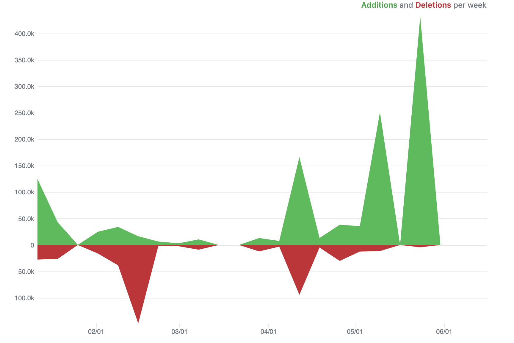
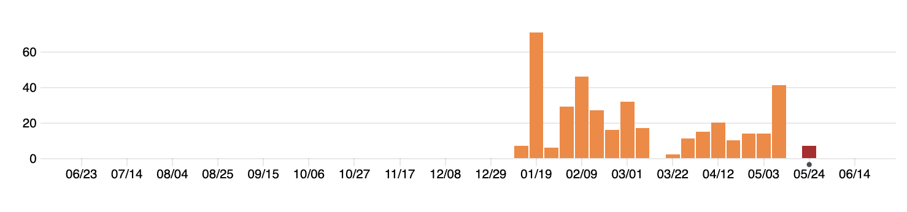

Chapter 2 Experimental Data Recording
2.1 Separating data recording and analysis
Many biomedical laboratories currently use spreadsheets—with formulas creating underlying connections between spreadsheet cells—to jointly record, visualize, and analyze experimental data (Broman and Woo 2018). This practice impedes the transparency and reproducibility of both data recording and data analysis. When a research group develops and uses an evolving spreadsheet template with embedded formulas, it leads to a data recording / analysis process that can become extraordinarily opaque and complex. To improve the computational reproducibility of a research project, it is critical for biomedical researchers to learn the importance of maintaining recorded experimental data as “read-only” files, separating data recording from any data pre-processing or data analysis steps (Broman and Woo 2018; Marwick, Boettiger, and Mullen 2018). Statisticians have outlined specific methods that a laboratory-based scientist can take to ensure that data shared in an Excel spreadsheet are shared in a reliable and reproducible way, including avoiding macros or embedded formulas, using a separate Excel file for each dataset, recording descriptions of variables in a separate code book rather than in the Excel file, avoiding the use of color of the cells to encode information, using “NA” to code missing values, avoiding spaces in column headers, and avoiding splitting or merging cells (Ellis and Leek 2018; Broman and Woo 2018). In this module, we will describe this common practice and will outline alternative approaches that separate the steps of data recording and data analysis.
Objectives. After this module, the trainee will be able to:
- Explain the difference between data recording and data analysis
- Understand why collecting data on spreadsheets with embedded formulas impedes reproducibility
- List alternative approaches to improve reproducibility
2.1.1 Data recording versus data analysis
Many scientific laboratories use spreadsheets within their data collection process, both to record data and to clean and analyze the data. One survey of over 250 biomedical researchers at the University of Washington found that most respondants used general-purpose applications like spreadsheets (Anderson et al. 2007), while a survey of neuroscience researchers at the University of Newcastle similarly found that most respondents used spreadsheets and other general-purpose software in their research (AlTarawneh and Thorne 2017). A working group on bioinformatics and data-intensive science similarly found spreadsheets were the most common tool used across attendees (Barga et al. 2011).
Spreadsheets have long been an extremely popular tool, in part because they allow people without programming experience to conduct a range of standard computations and statistical analyses through a visual interface that is more immediately user-friendly to non-programmers than programs with command line interfaces. An early target for spreadsheet programs in terms of early users was business executives, and so the programs were designed to be very simple and easy to use—just one step up in complexity from crunching numbers on the back of an envelope (Campbell-Kelly 2007). Spreadsheet programs in fact became so popular within businesses that many attribute these programs with driving the uptake of personal computers (Campbell-Kelly 2007).
Spreadsheets were innovative and rapidly adapted in part because they allowed users to combine data recording and analysis—while previously, in business settings, any complicated data analysis tasked needed to be outsourced to mainframe computers and data processing teams, the initial spreadsheet program (VisiCalc) allowed one person to quickly apply and test different models or calculations to recorded data (Levy 1984). These spreadsheet programs allowed non-programmers to engage with data, including data processing and analysis tasks, that previously required programming expertise (Levy 1984).
In some cases, a spreadsheet is used solely to record data, as a simple type of database (Birch, Lyford-Smith, and Guo 2018). However, biomedical researchers often use spreadsheets to both record and analyze experimental data (Anderson et al. 2007). In this case, data processing and analysis is implemented through the use of formulas and macros embedded within the spreadsheet. When a spreadsheet has formulas or macros within it, the spreadsheet program creates an internal record of how cells are connected through these formulas. For example, if the value in a specific cell is converted from Fahrenheit to Celsius to fill a second cell, and then that value is combined with other values in a column to calculate the mean temperature across several observations, then the spreadsheet program has internally saved how the later cells depend on the earlier ones. When you change the value recorded in a cell of a spreadsheet, the spreadsheet program queries this record and only recalculates the cells that depend on that cell. This process allows the program to quickly “react” to any change in cell inputs, immediately providing an update to all downstream calculations and analyses (Levy 1984). Starting from the spreadsheet program Lotus 1-2-3, spreadsheet programs also included macros, “a single computer instruction that stands for a sequence of operations” (Creeth 1985).
Spreadsheets have become so popular in part because so many people know how to use them, at least in basic ways, and so many people have the software on their computers that files can be shared with the virtual guarantee that everyone will be able to open the file on their own computer (Hermans et al. 2016). Spreadsheets uses the visual metaphore of a traditional gridded ledger sheet (Levy 1984), providing an interface that is easy for users to immediately understand and create a mental map of (Birch, Lyford-Smith, and Guo 2018; Barga et al. 2011). This visually clear interface also means that spreadsheets can be printed or incorporated into other documents (Word files, PowerPoint presentations) “as-is”, as a workable and understandable table of data values. In fact, some of the most popular plug-in software packages for the early spreadsheet program Lotus 1-2-3 were programs for printing and publishing spreadsheets (Campbell-Kelly 2007). This “What You See Is What You Get” interface was a huge advance from previous methods of data analysis for the first spreadsheet program, VisiCalc, providing a “window to the data” that was accessible to business executives and others without programming expertise (Creeth 1985). Several surveys of researchers have found that spreadsheets were popular because of their simplicity and ease-of-use (Anderson et al. 2007; AlTarawneh and Thorne 2017; Barga et al. 2011). By contrast, databases and scritped programming lanugages can be perceived as requiring a cognitive load and lengthly training that is not worth the investment when an easier tool is available (Hermans et al. 2016; Anderson et al. 2007; Myneni and Patel 2010; Barga et al. 2011; Topaloglou et al. 2004).
2.1.2 Hazards of combining recording and analysis
Raw data often lost.
One of the key tenets of ensuring that research is computationally reproducible is to always keep a copy of all raw data, as well as the steps taken to get from the raw data to a cleaned version of the data through to the results of data analysis. However, maintaining a easily accessible copy of all original raw data for a project is a common problem among biomedical researchers (Goodman et al. 2014), especially as team members move on from a laboratory group (Myneni and Patel 2010).
The use of spreadsheets to jointly record and analyze data can contribute to this problem. Spreadsheets allow for the immediate and embedded processing of data. As a result, it may become very difficult to pull out the raw data originally recorded in a spreadsheet. At the least, the combination of raw and processed data in a spreadsheet makes it hard to identify which data points within a spreadsheet make up the raw data and which are the result of processing that raw data. One study of operational spreadsheets noted that:
“The data used in most spreadsheets is undocumented and there is no practical way to check it. Even the original developer would have difficulty checking the data.” (Powell, Baker, and Lawson 2009)
Further, data in a spreadsheet is typically not saved as “read-only”, so it is possible for it to be accidentally overwritten. In situations where spreadsheets are shared among multiple users, without “read-only” protection, original cell values can easily be accidentally written over, and it may not be clear who last changed a value, when it was changed, or why (AlTarawneh and Thorne 2017).
Finally, many spreadsheets use a proprietary format. In the development of spreadsheet programs, this use of proprietary, binary file formats helped a software program keep users, increasing barriers for a user to switch to a new program (since it wouldn’t be able to read their old files) (Campbell-Kelly 2007). However, this file format may be hard to open in the future, as software changes and evolves (Michener 2015); by comparison, plain text files should be widely accessible through general purpose tools regardless of changes to proprietary software like Microsoft Excel.
Opacity of analysis steps and potential for errors.
Previous studies have found that errors are very common within spreadsheets (Hermans et al. 2016). For example, one study of 50 operational spreadsheets found that about 90% contained at least one error (Powell, Baker, and Lawson 2009). In part, it is easier to make errors in spreadsheets and harder to catch errors in later work with a spreadsheet because the formulas and connections between cells aren’t visible when you look at the spreadsheet—they’re behind the scenes (Birch, Lyford-Smith, and Guo 2018). This makes it very hard to get a clear and complete view of the pipeline of analytic steps in data processing and analysis within a spreadsheet, as well as to discern how cells are connected within and across sheets of the spreadsheet. As one early article on the history of spreadsheet programs notes:
“People tend to forget that even the most elegantly crafted spreadsheet is a house of cards, ready to collapse at the first erroneous assumption. The spreadsheet that looks good but turns out to be tragically wrong is becoming a familiar phenomenon.” (Levy 1984)
Some characteristics of spreadsheets may heighten chances for errors. These include high conditional complexity (i.e., lots of branching of data flow through if / else structures), formulas that depend on a large number of cells or that incorporate many functions (Hermans et al. 2016). Following the logical chain of spreadsheet formulas can be particularly difficult when several calculations are chained in a row (Hermans and Murphy-Hill 2015). Very long chains of dependent formulas across spreadsheet cells may in some case requiring sketching out by hand the flow of information through the spreadsheet to understand what’s going on (Nardi and Miller 1990). The use of macros can also make it particularly hard to figure out the steps of an analysis and to diagnose and fix any bugs in those steps (Nash 2006; Creeth 1985). One study of spreadsheets in use in real life applications noted that, “Many spreadsheets are so chaotically designed that auditing (especially of a few formulas) is extremely difficult or impossible.” (Powell, Baker, and Lawson 2009)
In some cases, formula dependences might span across different sheets of a spreadsheet file. For the example given above of a spreadsheet that converts temperature from one unit to another and then averages across observations, for example, the original temperature might be recorded in one sheet while the converted temperature value is calculated and shown in a second sheet. These cross-sheet dependencies can make the analysis steps even more opaque (Hermans et al. 2016), as a change in the cell value of one sheet might not be immediately visible as a change in another cell on that sheet (the same is true for spreadsheets so large that upstream and downstream cells are not concurrently visible on screen). Other common sources of errors included incorrect references to cells inside formulas and incorrect use of formulas (Powell, Baker, and Lawson 2009) or errors introduced through the common practice of copying and pasting when developing spreadsheets (Hermans et al. 2016).
To keep analysis steps clear, whether in scripted code or in spreadsheets or pen-and-paper calculations, it is important to document what is being done at each step and why (Goodman et al. 2014). Scripted languages allow for code comments, which are written directly into the script but not evaluated by the computer, and so can be used to document steps within the code without changing the operation of the code. Further, the program file itself often presents a linear, step-by-step view of the pipeline, stored separated from the data itself (Creeth 1985). Calculations done with pen-and-paper (e.g., in a laboratory notebook) can be annotated with text to document the steps. However, there is evidence that spreadsheets are often poorly documented, or documented in ways that are hard to keep track of. Before spreadsheets,
“The formulas appeared in one place and the results in another. You could see what you were getting. That cannot be said of electronic spreadsheets, which don’t display the formulas that govern their calculations. As Mitch Kapor explained, with electronic spreadsheets, ‘You can just randomly make formulas, all of which depend on each other. And when you look at the final results, you have no way of knowing what the rules are, unless someone tells you.’” (Levy 1984)
Within spreadsheets, the logic and methods behind the pipeline of data processing and analysis is often not documented, or only documented with cell comments (hard to see as a whole) or in emails, not the spreadsheet file. One study that investigated a large collection of spreadsheets found that most do not include documentation explaining the logic or implementation of data processing and analysis implemented within the spreadsheet (Hermans et al. 2016). A survey of neuroscience researchers at a UK institute found that about a third of respondents included no documentation for spreadsheets used in their research laboratories (AlTarawneh and Thorne 2017).
When spreadsheet pipelines are documented, it is often through methods that are hard to find and interpret later. One study of scientific researchers found that, when research spreadsheets were documented, it was often through “cell comments” added to specific cells in the spreadsheet, which can be hard to interpret inclusively to understand the flow and logic of a spreadsheet as a whole (AlTarawneh and Thorne 2017). In some cases, teams discuss and document functionality and changes in spreadsheets through email chains, passing different versions of the spreadsheet file as attachments of emails with discussion of the spreadsheet in the email body. One research team investigated over 700,000 emails from employees of Enron that were released during legal proceedings and investigated the spreadsheets attached to these emails (over 15,000 spreadsheets) as well as discussion of the spreadsheets within the emails themselves (Hermans and Murphy-Hill 2015). They found that the logic and methods of calculations within the spreadsheets were often documented within the bodies of emails that team members used to share and discuss spreadsheets. This means that, if someone needs to figure out why a step was taken or identify when an error was introduced into a spreadsheet, they may need to dig through the chain of old emails documenting that spreadsheet, rather than being able to find the relevant documentation within the spreadsheet’s own file.
Often spreadsheets are designed, and their structure determined, by one person, and this is often done in an ad hoc fashion, rather than designing the spreadsheet to follow a common structure for the research field or for the laboratory group (Anderson et al. 2007). Often, data processing and analysis pipelines for spreadsheets are not carefully designed; instead, it’s more typically for spreadsheet user to start by directly entering data and formulas without a clear overall plan (AlTarawneh and Thorne 2017). Often, the person who created the spreadsheet is the only person who fully knows how it works (Myneni and Patel 2010), particularly if the spreadsheet includes complex macros or a complicated structure in the analysis pipeline (Creeth 1985).
This practice creates a heavy dependence on the person who created that spreadsheet anytime the data or results in that spreadsheet need to be interpreted. This is particularly problematic in projects where the spreadsheet will be shared for collaboration or adapted to be used in a future project, as is often done in scientific research groups. One survey of neuroscience researchers at a UK institute, for example, found that “on average, 2–5 researchers share the same spreadsheet”. (AlTarawneh and Thorne 2017) In this case, it can be hard to “onboard” new people to use the file, and much of the work and knowledge about the spreadsheet can be lost when that person moves on from the business or laboratory group (Creeth 1985; Myneni and Patel 2010). If you share a spreadsheet with numerous and complex macros and formulas included to clean and analyze the data, it can take an extensive amount of time, and in some cases may be impossible, for the researcher you share it with to decipher what is being done to get from the original data input in some cells to the final results shown in others and in graphs. Further, if others can’t figure out the steps being done through macros and formulas in a spreadsheet, they will not be able to check it for problems in the logic of the overall analysis pipeline or for errors in the specific formulas used within that pipeline. They also will struggle to extend and adapt the spreadsheet to be used for other projects. These problems come up not only when sharing with a collaborator, but also when reviewing spreadsheets that you have previously created and used (as many have noted, your most frequent collaborator will likely be “future you”). In fact, one survey of biomedical researchers at the University of Washington noted that,
“The profusion of individually created spreadsheets containing overlapping and inconsistently updated data created a great deal of confusion within some labs. There was little consideration to future data exchange of submission requirements at the time of publication.” (Anderson et al. 2007)
There are methods that have been brought from more traditional programming work into spreadsheet programming to try to help limit errors, including spreadsheet assertions to enable testing of spreadsheets (Hermans et al. 2016). However, these are often not implemented, in part perhaps because many spreadsheet users see themselves as “end-users”, creating spreadsheets for their own personal use rather than as something robust to future use by others, and so don’t seek out strategies adopted by “programmers” when creating stable tools for others to use (Hermans et al. 2016). In practice, though, often a spreadsheet is used much longer, and by more people, than originally intended. Often, the spreadsheet in this case was not designed for robust, long-term use. From early in the history of spreadsheet programs, users have shared spreadsheet files with interesting functionality with other users (Levy 1984), and the lifespan of a spreadsheet can be much longer than originally intended—a spreadsheet created by one user for their own personal use can end up being used and modified by that person or others for years (Hermans et al. 2016).
Subpar software for analysis.
While spreadsheets serve as a widely-used tool for data recording and analysis, in many cases spreadsheets programs are poorly suited to clean and analyze scientific data compared to other programs. As tools and interfaces continue to develop that make other software more user-friendly to those new to programming, scientists may want to reevaluate the costs and benefits, in terms of both time required for training and aptness of tools, for spreadsheet programs compared to using scripted programming languages like R and Python.
Several problems have been identified with spreadsheet programs in the context of recording and, especially, analyzing scientific data. First, some statistical methods may be inferior to those available in other statistical programming language. Since the most popular spreadsheet program (Excel) is closed source, it is hard to identify and diagnose such problems, and there is likely less of an incentive for problems in statistical methodology to be fixed (rather than using development time and funds to increase easier-to-see functionality in the program). Many statistical operations require computations that cannot be perfectly achieved with a computer, since the computer must ultimately solve many mathematical problems using numerical approximations rather than continuous methods (e.g., calculus). The choice of the algorithms used for these approximations heavily influence how closely a result approximates the true answer.
A series of papers examined the quality of statistical methods in several statistical software programs, including Excel, starting in the 1990s (Bruce D McCullough and Wilson 1999; Bruce D McCullough 1999; McCullough and Wilson 2002, 2005; McCullough and Heiser 2008; Mélard 2014). In the earliest studies, they found some concerns across all programs considered (Bruce D McCullough and Wilson 1999; Bruce D McCullough 1999). One of the biggest concerns, however, was that there was little evidence over the years that the identified problems in Excel were resolved, or at least improved, over time (McCullough 2001; McCullough and Heiser 2008). The authors note that there may be little incentive for checking and fixing problems with algorithms for statistical approximation in closed source software like Excel, where sales might depend more on the more immediately evident functionality in the software, while problems with statistical algorithms might be less evident to potential users (McCullough 2001).
Open source software, on the other hand, offers pathways for identifying and fixing any problems in the software, including for statistical algorithms and methods implemented in the software’s code. Since the full source code is available, researchers can closely inspect the algorithms being used and compare them to the latest knowledge in statistical computing methodology. Further, if an inferior algorithm is in use, most open source software licenses allow a user to adapt and extend the software, for example to implement better statistical algorithms.
Second, spreadsheet programs can include automated functionality that’s meant to make something easier for most users, but that might invisibly create problems in some cases. A critical problem, for example, has been identified when using Excel for genomics data. When Excel encounters a cell value in a format that seems like it could be a date (e.g., “Mar-3-06”), it will try to convert that cell to a “date” class. Many software programs save date as this special “date” format, where it is printed and visually appears in a format like “3-Mar-06” but is saved internally by the program as a number (for Microsoft Excel, the number of days since January 1, 1900 (Willekens 2013)). By doing this, the software can more easily undertake calculations with dates, like calculating the number of days between two dates or which of two dates is earlier. Bioinformatics researchers at the National Institutes of Health found that Excel was doing this type of automatic and irreversible date conversion for 30 gene names, including “MAR3” and “APR-4”, resulting in these gene names being lost for further analysis (Zeeberg et al. 2004). Other automatic conversion problems caused the lost of clone identifiers with composed of digits and the letter “E” (Zeeberg et al. 2004; Welsh et al. 2017), which were assumed to be expressing a number using scientific notation and so automatically and irreversibly converted to a numeric class. Further automatic conversion problems can be caused by cells that start with an operator (e.g., “+ control”) or with leading zeros in a numeric identifier (e.g., “007”) (Welsh et al. 2017).
Avoiding this automatic date conversion required specifying that columns with columns susceptible to these problems, including columns of gene names, should be retained in a “text” class in Excel’s file import process. While this problem was originally identified and published in 2004 (Zeeberg et al. 2004), along with tips to identify and avoid the problem, a study in 2016 found that approximately a fifth of genomics papers investigated in a large-scale review had gene name errors resulting from Excel automatic conversion, with the rate of errors actually increasing over time (Ziemann, Eren, and El-Osta 2016).
Finally, spreadsheet programs can be limited as analysis needs become more complex or large (Topaloglou et al. 2004). For example, spreadsheets can be problematic when integrating or merging large, separate datasets (Birch, Lyford-Smith, and Guo 2018). This can create barriers, for example, in biological studies seeking to integrate measurements from different instruments (e.g., flow cytometry data with RNA-sequencing data). Further, while datasets continue to expand in their capacity for data, for very large datasets they continue to face limits that may be reached in practical applications (Birch, Lyford-Smith, and Guo 2018), and their efficiency of running data processing and analysis pipelines across large datasets can be slow compared to code implemented with other programming languages.
Difficulty collaborating with statisticians.
Modern biomedical researchers requires large teams, with statisticians and bioinformaticians often forming a critical part of the team to enable sophisticated processing and analysis of experimental data. However, the process of combining data recording and analysis of experimental data, especially through the use of spreadsheet programs, can create barriers in working across disciplines. One group defined these issues as “data friction” and “science friction”—the extra steps and work required at each interface where data passes, for example, from a machine to analysis or from a collaborator in one discipline to one in a separate discipline (Edwards et al. 2011). From a survey of scientific labs, for example, one respondent said:
“I can give data that I think are appropriate to answer a question to a biostatistician, but when they look at it, they see it from a different point of view. And that spreadsheet does not really encapsulate where it came from very well, how was it generated, was it random, how was this data collected. You would run a series of queries that you think are pertinent to what this biostatistician would want to know. They become a part of the exploration and not just a receiver of whatever I decided to put in my spreadsheet on that day. What I get back is almost never fully documented in any way that I can really understand and add more to the process.” (Myneni and Patel 2010)
When collaborating with statisticians or bioinformaticians, one of the key sources of this “data friction” can result from the use of spreadsheets to jointly record and analyze experiemental data. First, spreadsheets are easy to print or copy into another format (e.g., PowerPoint presentation, Word document), and so researchers often design spreadsheets to be immediately visually appealing to viewers. For example, a spreadsheet might be designed to include hierarchically organized headers (e.g., heading and subheading, some within a cell merged across several columns), or to show the result of a calculation at the bottom of a column of observations (e.g., “Total” in the last cell of the column) (Teixeira and Amaral 2016). Multiple separate small tables might be included in the same sheet, with empty cells used for visual separation, or use a “horizontal single entry” design , where the headers are in the leftmost column rather than the top row (Teixeira and Amaral 2016).
These spreadsheet design choices make it much more difficult for the contents of the spreadsheet to be read into other statistical programs. These types of data require several extra steps in coding, in some cases fairly complex coding, with regular expressions or logical rules needed to parse out the data and convert it to the needed shape, before the statistical work can be done for the dataset. This is a poor use of time for a collaborating statistician, especially if it can be avoided through the design of the data recording template. Further, it introduces many more chances for errors in cleaning the data.
Further, information embedded in formulas, macros, and extra formatting like color or text boxes is lost when the spreadsheet file is input into other programs. Spreadsheets allow users to use highlighting to represent information (e.g., measurements for control animals shown in red, those for experiment animals in blue) and to include information or documentation in text boxes. For example, one survey study of biomedical researchers at the University of Washington included this quote from a respondent: “I have one spreadsheet that has all of my chromosomes … and then I’ve gone through and color coded it for homozygosity and linkage.” (Anderson et al. 2007) All the information encoded in this sheet through color will be lost when the data from the spreadsheet is read into another statistical program.
2.1.3 Approaches to separate recording and analysis
In the remaining modules in this section, we will present and describe techniques that can be used to limit or remove these problems. First, in the module on “Structure data”, we will walk through techniques to design data recording formats so that data is saved in a consistent format across experiments within a laboratory group, and in a way that removes “data friction” for collaboration with statisticians or later use in scripted code. These techniques can be immediately used to design a better spreadsheet to be used solely for data collection.
In later modules, we will discuss the use of R projects to coordinate data recording and analysis steps within a directory, while using separate files for data recording versus data processing and analysis. These more advanced formats will enable the use of quality assurance / control measures like testing of data entry and analysis functionality, better documentation of data analysis pipelines, and easy use of version control to track projects and collaborate transparently and with a recorded history.
[We will probably want to flesh this section out as we write later modules.]
2.1.4 Discussion questions
:w
2.2 Principles and power of structured data formats
The format in which experimental data is recorded can have a large influence on how easy and likely it is to implement reproducibility tools in later stages of the research workflow. Recording data in a “structured” format brings many benefits. In this module, we will explain what makes a dataset “structured” and why this format is a powerful tool for reproducible research.
Every extra step of data cleaning is another chance to introduce errors in experimental biomedical data, and yet laboratory-based researchers often share experimental data with collaborators in a format that requires extensive additional cleaning before it can be input into data analysis (Broman and Woo 2018). Recording data in a “structured” format brings many benefits for later stages of the research process, especially in terms of improving reproducibility and reducing the probability of errors in analysis (Ellis and Leek 2018). Data that is in a structured, tabular, two-dimensional format is substantially easier for collaborators to understand and work with, without additional data formatting (Broman and Woo 2018). Further, by using a consistent structured format across many or all data in a research project, it becomes much easier to create solid, well-tested code scripts for data pre-processing and analysis and to apply those scripts consistently and reproducibly across datasets from multiple experiments (Broman and Woo 2018). However, many biomedical researchers are unaware of this simple yet powerful strategy in data recording and how it can improve the efficiency and effectiveness of collaborations (Ellis and Leek 2018).
Objectives. After this module, the trainee will be able to:
- List the characteristics of a structured data format
- Describe benefits for research transparency and reproducibility
- Outline other benefits of using a structured format when recording data
2.2.1 Data recording standards
For many areas of biological data, there has been a push to create standards for how data is recorded and communicated. Standards can clarify both the content that should be included in a dataset, the format in which that content is stored, and the vocabulary used within this data. One article names these three facets of a data standard as the minimum information, file formats, and ontologies (Ghosh et al. 2011).
“It is important to distinguish between standards that specify how to actually do experiments and standards that specify how to describe experiments. Recommendations such as what standard reporters (probes) should be printed on microarrays or what quality control steps should be used in an experiment belong to the first category. Here we focus on the standards that specify how to describe and communicate data and information.” (Brazma, Krestyaninova, and Sarkans 2006)
Many people and organizations (including funders) are excited about the idea of developing and using data standards, especially at the community level. Good standards, that are widely adapted by researchers, can help in making sure that data submitted to data repositories are used widely and that software can be developed that is interoperable with data from many research group’s experiments. There are also many advantages, if there are not community-level standards for recording a certain type of data, to develop and use local data standards for recording data from your own experiments. This section describes the elements that go into a data standard, discusses some choices to be made when definining a data standard (especially choices on data structure and file formats), and some of the advantages and disadvantages of developing and using data recording standards at both the research group and community levels.
The first of four root causes for irreproducibility in biomedical research: “First, a lack of standards for data generation leads to problems with the comparability and integration of data sets.” (Waltemath and Wolkenhauer 2016)
Ontology standards. Although it has the most complex name, an ontology (sometimes called a terminology (Sansone et al. 2012)) might be the easiest and quickest to adapt in recording data. An ontology helps define a vocabulary that is controlled and consistent to use that researchers can use to refer to concepts and concrete things within an area of research. It helps researchers, when they want to talk about an idea or thing, to use one word, and just one word, and to ensure that it will be the same word used by other researchers when they refer to that idea or thing. Ontologies also help to define the relationships between ideas or concrete things in a research area (Ghosh et al. 2011), but here we’ll focus on their use in provided a consistent vocabulary to use when recording data.
For example, when recording a dataset, what do you call a small mammal that is often kept as a pet and that has four legs and whiskers and purrs? Do you record this as “cat” or “feline” or maybe, depending on the animal, even “tabby” or “tom” or “kitten”? Similarly, do you record tuberculosis as “tuberculosis” or “TB” or or maybe even “consumption”? If you do not use the same word consistently in a dataset to record an idea, then while a human might be able to understand that two words should be considered equivalent, a computer will not be able to immediately tell that “TB” should be treated equivalently to “tuberculosis”.
At a larger scale, if a research community can adapt an ontology they agree to use throughout their studies, it will make it easier to understand and integrate datasets produced by different research laboratories. If every research group uses the term “cat”, then code can easily be written to extract and combine all data recorded for cats across a large repository of experimental data. On the other hand, if different terms are used, then it might be necessary to first create a list of all terms used in datasets in the respository, then pick through that list to find any terms that are exchangeable with “cat”, then write script to pull data with any of those terms.
Several onotologies already exist or are being created for biological and other biomedical research (Ghosh et al. 2011). Existing community-level ontologies in the biological sciences include [Gene Ontology and Systems Biology Ontology are listed in the Ghosh et al. paper as two examples]. For biomedical science, practice, and research, the BioPortal website (http://bioportal.bioontology.org/) provides access to almost 800 ontologies, including several versions of the International Classification of Diseases, the Medical Subject Headings (MESH), the National Cancer Institute Thesaurus, the Orphanet Rare Disease Ontology and the National Center for Biotechnology Information (NCBI) Organismal Classification. For each ontology in the BioPortal website, the website provides a link for downloading the ontology in several formats. If you download the ontology as a “CSV”, you can open it in your favorite spreadsheet program and explore how it defines specific terms to use for each idea or thing you might need to discuss within that topic area, as well as synonyms for some of the terms. To use an ontology when recording your own data, just make sure you use the ontology’s suggested terms in your data. For example, if you’d like to use the Ontology for Biomedical Investigations (http://bioportal.bioontology.org/ontologies/OBI) and you are recording how many children a woman has had who were born alive, you should name that column of the data “number of live births”, not “# live births” or “live births (N)” or anything else. Other collections of ontologies exist for fields of scientific research, including the Open Biological and Biomedical Ontology (OBO) Foundry (http://www.obofoundry.org/).
If there are community-wide ontologies in your field, it is worthwhile to use them in recording experimental data in your research group. Even better is to not only consistently use the defined terms, but also to follow any conventions with capitalization. While most statistical programs provide tools to change capitalization (for example, to change all letters in a character string to lower case), this process does require an extra step of data cleaning and an extra chance for confusion or for errors to be introduced into data.
Minimum information standards. The next easiest facet of a data standard to bring into data recording in a research group is minimum information. Within a data recording standard, minimum information (sometimes also called minimum reporting guidelines (Sansone et al. 2012) or reporting requirements (Brazma, Krestyaninova, and Sarkans 2006)) specify what should be included in a dataset (Ghosh et al. 2011). Using minimum information standards help ensure that data within a laboratory, or data posted to a repository, contain a number of required elements. This makes it easier to re-use the data, either to compare it to data that a lab has newly generated, or to combine several posted datasets to aggregate them for a new, integrated analysis, considerations that are growing in importance with the increasing prevalence of research repositories and research consortia in many fields of biomedical science (Keller et al. 2017).
“Minimum information is a checklist of required supporting information for datasets from different experiments. Examples include: Minimum Information About a Microarray Experiment (MIAME), Minimum Information About a Proteomic Experiment (MIAPE), and the Minimum Information for Biological and Biomedical Investigations (MIBBI) project.” (Ghosh et al. 2011)
Standardized file formats. While using a standard ontology and a standard for minimum information is a helpful start, it just means that each dataset has the required elements somewhere, and using a consistent vocabulary—it doesn’t specify where those elements are in the data or that they’ll be in the same place in every dataset that meets those standards. As a result, datasets that all meet a common standard can still be very hard to combine, or to create common data analysis scripts and tools for, since each dataset will require a different process to pull out a given element.
Computer files serve as a way to organize data, whether that’s recorded datapoints or written documents or computer programs (Kernighan and Pike 1984). As the programmer Paul Ford writes,
“Data is just stuff, or rather, structured stuff: The cells of a spreadsheet, the structure of a Word document, computer programs themselves—all data.” (Ford 2015)
A file format defines the rules for how the bytes in the chunk of memory that makes up a certain file should be parsed and interpreted anytime you want to meaningfully access and use the data within that file (Murrell 2009). There are many file formats you may be familiar with—a file that ends in “.pdf” must be opened with a Portable Document Format (PDF) Reader like Adobe Acrobat, or it won’t make much sense (you can try this out by trying to open a “.pdf” file with a text editor, like TextEdit or Notepad). The Reader has been programmed to interpret the data in a “.pdf” file based on rules defining what data is stored where in the section of computer memory for that file. Because most “.pdf” files conform to the same file format rules, powerful software can be built that works with any file in that format.
For certain types of biomedical data, the challenge of standardizing a format has similarly been addressed through the use of well-defined rules for not only the content of data, but also the way that content is structured. This can be standardized through standardized file formats (sometimes also called data exchange formats (Brazma, Krestyaninova, and Sarkans 2006)) and often defines not only the upper-level file format (e.g., use of a “.csv” file type), but also how data within that file type should be organized. If data from different research groups and experiments is recorded using the same file format, researchers can develop software tools that can be repeatedly used to interpret and visualize that data; on the other hand, if different experiments record data using different formats, bespoke analysis scripts must be written for each separate dataset. This is a blow not only to the efficiency of data analysis, but also a threat to the accuracy of that analysis. If a set of tools can be developed that will work over and over, more time can be devoted to refining those tools and testing them for potential errors and bugs, while one-shot scripts often can’t be curated with similar care. One paper highlights the dangers that come with working with files that don’t follow a defined format:
“Beware of common pitfalls when working with ad hoc bioinformatics formats. Simple mistakes over minor details like file formats can consume a disproportionate amount of time and energy to discover and fix, so mind these details early on.” (Buffalo 2015)
Some biomedical data file formats have been created to help smooth over the transfer of data that’s captured by complex equipment into software that can analyze that data. For example, many immunological studies need to measure immune cell populations in experiments, and to do so they use piece of equipment called a flow cytometer that probes cells in a sample with lasers and measures resulting intensities to determine characteristics of that cell. The data created by this equipment is large (often measurements from [x] or more lasers are taken for [x] cells in a single run) and somewhat complex, with a need to record not only the intensity measurements from each laser, but also some metadata about the equipment and characteristics of the run. If every company that manufactured flow cytometers used a different file format for saving the resulting data, then a different set of analysis software would need to be developed to accompany each piece of equipment. For example, a laboratory at a university with flow cytometers from two different companies would need licenses for two different software programs to work with data recorded by flow cytometers, and they would need to learn how to use each software package separately. There is a chance that software could be developed that used shared code for data analysis, but only if it also included separate sets of code to read in data from all types of equipment and to reformat them to a common format.
This isn’t the case, however. Instead, there is a commonly agreed on file format that flow cytometers should use to record the data they collect, called the the FCS file format. This format has been defined through a series of papers [refs], with several separate versions as the file format has evolved over the years. It provides clear specifications on where to save each relevant piece of information in the block of memory devoted to the data recorded by the flow cytometer (in some cases, leaving a slot in the file blank if no relevant information was collected on that element). As a result, people have been able to create software, both proprietary and open-source, that can be used with any data recorded by a flow cytometer, regardless of which company manufacturer the piece of equipment that was used to generate the data. Other types of biomedical data also have standardized file formats, including [example popular file formats for biomedical data]. In some cases these were defined by an organization, society, or initiative (e.g., the Metabolomics Standards Initiative) (Ghosh et al. 2011), while in some cases the file format developed by a specific equipment manufacturer has become popular enough that it’s established itself as the standard for recording a type of data (Brazma, Krestyaninova, and Sarkans 2006).
For an even simpler example, thing about recording dates. The minimum information standard for a date might always be the same—a recorded value must include the day of the month, month, and year. However, this information can be structured in a variety of ways. In many scientific data, it’s common to record this information going from the largest to smallest units, so March 12, 2006, would be recorded “2006-03-12”. Another convention (especially in the US) is to record the month first (e.g., “3/12/06”), while another (more common in Europe) is to record the day of the month first (e.g., “12/3/06”).
If you are trying to combine data from different datasets with dates, and all use a different structure, it’s easy to see how mistakes could be introduced unless the data is very carefully reformatted. For example, March 12 (“3-12” with month-first, “12-3” with day-first) could be easily mistaken to be December 3, and vice versa. Even if errors are avoided, combining data in different structures will take more time than combining data in the same structure, because of the extra needs for reformatting to get all data in a common structure.
“Vast swathes of bioscience data remain locked in esoteric formats, are described using nonstandard terminology, lack sufficient contextual information, or simply are never shared due to the perceived cost or futility of the exercise.” (Sansone et al. 2012)
2.2.2 Defining data standards for a research group
If some of the data you record from your experiments comes from complex equipment, like flow cytometers [or?], you may be recording much of that data in a standardized format without any extra effort, because that format is the default output format for the equipment. However, you may have more control over other data recorded from your experiments, including smaller, less complex data recorded directly into a laboratory notebook or spreadsheet. You can derive a number of benefits from defining and using a standard for collecting this data, as well.
As already mentioned, for many of the complex types of biological data, standardized file formats exist. For example, flow cytometry data is typically collected and recorded in .fcs files. Every piece of flow cytometry equipment can then be built to output data in this format, and every piece of software to analyze flow cytometry data can be built to read in this input. The .fcs file format species how both raw data and metadata (e.g., compensation information, equipment details) can be saved within the file—everyone who uses that file format knows where to store data and where to find data of a certain type.
Much of the data collected in a laboratory is smaller, less complex, or less structured than these types of data, data that is recorded “by hand”, often into a laboratory notebook or a spreadsheet. One paper describes this type of data as the output of “traditional, low-throughput bench science” (Wilkinson et al. 2016). For this data recording, the data may be written down in an ad hoc way—however the particular researcher doing the experiment thinks makes sense—and that format might change with each experiment, even if many experiments have similar data outputs. As a result, it becomes harder to create standardized data processing and analysis scripts that work with this data or that integrate it with more complex data types. Further, if everyone in a laboratory sets up their spreadsheets for data recording in their own way, it is much harder for one person in the group to look at data another person recorded and immediately find what they need within the spreadsheet.
As a step in a better direction, the head of a research group may designate some common formats (e.g., a spreadsheet template) that all researchers in the group should use when recording the data from a specific type of experiments. This provides consistency across the recorded data for the laboratory, making easier for one lab member to quickly understand and navigate data saved by another lab member. It also opens the possibility to create tools or scripts that read in and analyze the data that can be re-used across multiple experiments with minor changes. This helps improve the efficiency and reproducibility of data analysis, visualization, and reporting steps of the research project.
This does require some extra time commitment (Brazma, Krestyaninova, and Sarkans 2006). First, time is needed to design the format, and it does take a while to develop a format that is inclusive enough that it includes a place to put all data you might want to record for a certain type of experiment. Second, it will take some time to teach each laboratory member what the format is and how to make sure they comply with it when they record data.
On the flip side, the longer-term advantages of using a defined, structured format will outweigh the short-term time investments for many laboratory groups for frequently used data types. By creating and using a consistent structure to record data of a certain type, members of a laboratory group can increase their efficiency (since they do not need to re-design a data recording structure repeatedly). They can also make it easier for downstream collaborators, like biostatisticians and bioinformaticians, to work with their output, as those collaborators can create tools and scripts that can be recycled across experiments and research projects if they know the data will always come to them in the same format. These benefits increase even more if data format standards are created and used by a whole research field (e.g., if a standard data recording format is always used for researchers conducting a certain type of drug development experiment), because then the tools built at one institution can be used at other insitutions. However, this level of field-wide coordination can be hard to achieve, and so a more realistic immediate goal might be formalizing data recording structures within your research group or department, while keeping an eye out for formats that are gaining popularity as standards in your field to adopt within your group.
One key advantage to using standardized data formats even for recording simple, “low-throughput” data is that everyone in the research group will be able to understand and work with data recorded by anyone else in the group—data will not become impenetrable once the person who recorded it leaves the group. Also, once a group member is used to the format, the process of setting up to record data from a new experiment will be quicker, as it won’t require the effort of deciding and setting up a de novo format for a spreadsheet or other recording file. Instead, a template file can be created that can be copied as a starting point for any new data recording.
Finally, there are huge benefits further down the data analysis pipeline that come with always recording data in the same format. If your group is working with a statistician or data analyst, it becomes much easier for that person to quickly understand a new file if it follows the same format as previous files. Further, if you work with a statistician or data analyst, he or she probably creates code scripts to read in, re-format, analyze, and visualize the data you’ve shared. If you always record data using the same format, these scripts can be reused with very little modification. This saves valuable time, and it helps make more time for more interesting statistical analysis if your collaborator can trim time off reading in and reformatting the data in their statistical programming language.
One paper suggests that the balance can be found, in terms of deciding whether the benefits of developing a standard outweigh the costs, by considering how often data of a certain type is generated and used:
“To develop and deploy a standard creates an overhead, which can be expensive. Standards will help only if a particular type of information has to be exchanged often enough to pay off the development, implementation, and usage of the standard during its lifespan.” (Brazma, Krestyaninova, and Sarkans 2006)
2.2.3 Two-dimensional structured data format
So far, this module has explored why you might want to use standardized data formats for recording experimental data. The rest of the module aims to give you tips for how to design and define your own standardized data formats, if you decide that is worthwhile for certain data types recorded within your research group.
Once you commit to creating a defined, structured format, you’ll need to decide what that structure should be. There are many options here, and it’s very tempting to use a format that is easy on human eyes (Buffalo 2015). For example, it may seem appealing to create a format that could easily be copied and pasted into presentations and Word documents and that will look nice in those presentation formats. To facilitate this use, a laboratory might set up a recording format base on a spreadsheet template that includes multiple tables of different data types on the same sheet, or multi-level column headings.
Unfortunately, many of the characteristics that make a format attractive to human eyes will make it harder for a computer to make sense of. For example, if you include two tables in the same spreadsheet, it might make it easier for a person to get a one-screen look at two small data tables. However, if you want to read that data into a statistical program (or work with a collaborator who would), it will likely take some complex code to try to tell the computer how to find the second table in the spreadsheet. The same applies if you include some blank lines at the top of the spreadsheet, or use multi-level headers, or use “summary” rows at the bottom of a table. Further, any information you’ve included with colors or with text boxes in the spreadsheet will be lost when the data’s read into a statistical program. These design elements in a data format make it much harder to read the data embedded in a spreadsheet into other computer programs, including programs for more complex data analysis and visualization, like R and Python.
“Data should be formatted in a way that facilitates computer readability. All too often, we as humans record data in a way that maximizes its readability to us, but takes a considerable amount of cleaning and tidying before it can be processed by a computer. The more data (and metadata) that is computer readable, the more we can leverage our computers to work with this data.” (Buffalo 2015)
For most statistical programs, data can be easily read in from a spreadsheet if the computer can parse it in the following way: first, read in the first row, and assign each cell in that row as the name of a column. Then, read in the second row, and put each cell in the column the corresponds with the name of the cell in the same position in the first row. Also, set the data type for that column (e.g., number, character) based on the data type in this cell. Then, keep reading in rows until getting to a row that’s completely blank, and that will be the end of the data. If any of the rows has more cell than the first row, then that means that something went wrong, and should result in stopping or giving a warning. If any of the rows have fewer cells than the first row, then that means that there are missing data in that row, and should probably be recorded as missing values for any cells the row is “short” compared to the first row.
One of the easiest format for a computer to read is therefore a two-dimensional “box” of data, where the first row of the spreadsheet gives the column names, and where each row contains an equal number of entries. This type of two-dimensional tabular structure forms the basis for several popular “delimited” file formats that serve as a lingua franca across many simple computer programs, like the comma-separated values (CSV) format, the tab-delimited values (TSV) format, and the more general delimiter-separated values (DSV) format, which are a common format for data exchange across databases, spreadsheet programs, and statistical programs (Janssens 2014; Raymond 2003; Buffalo 2015).
“Tabular plain-text data formats are used extensively in computing. The basic format is incrediably simple: each row (also known as a record) is kept on its own line, and each column (also known as a field) is separate by some delimiter.” (Buffalo 2015)
If you think of the computer parsing a spreadsheet as described above, hopefully it clarifies why some spreadsheet formats would cause problems. For example, if you have two tables in the same spreadsheet, with blank lines between them, the computer will likely either think it’s read all the data after the first table, and so not read in any data from the second table, or it will think the data from both tables belong in a single table, with some rows of missing data in the center. To write the code to read in data from two tables into two separate datasets in a statistical program, it will be necessary to write some complex code to tell the computer how to search out the start of the second table in the spreadsheet.
Similar problems come up if a spreadsheet diverges from a regular, two-dimensional format, with a single row of column names to start the data. For example, if the data uses multiple rows to create multi-level column headers, anyone reading it into another program will need to either skip some of the rows of the column headers, and so lose information in the original spreadsheet, or write complex code to parse the column headers separately, then read in the later rows with data, and then stick the two elements back together. “Summary” rows at the end of a dataset (for example, the sums or means of all values in a column) will need to be trimmed off when the data is read into other programs, since most of the analysis and visualization someone would want to do in another program will calculate any summaries fresh, and will want each row of a dataset to represent the same “type” and level of data (e.g., one measurement from one animal).
For anything in a data format that requires extra coding when reading data into another program, you are introducing a new opportunity for errors at the interface between data recording and data analysis. If there are strong reasons to use a format that requires these extra steps, it will still be possible to create code to read in and parse the data in statistical programs, and if the same format is consistently used, then scripts can be developed and thoroughly tested to allow this. However, do keep in mind that this will be an extra burden on any data analysis collaborators who are using a program besides a spreadsheet program. The extra time this will require could be large, since this code should be vetted and tested thoroughly to ensure that the data cleaning process is not introducing errors. By contrast, if the data is recorded in a two-dimensional format with a single row of column names as the first row, data analysts can likely read it quickly and cleanly into other programs, with low risks of errors in the transfer of data from the spreadsheet.
“Cleaning data is a short-term solution, and preventing errors is promoted as a permanent solution. The drawback to cleaning data is that the process never ends, is costly, and may allow many errors to avoid detection.” (Keller et al. 2017)
2.2.4 Saving two-dimensional structured data in plain text file formats
If you have recorded data in a two-dimensional structured format, you can choose to save it in either a plain text format or a binary format. With a plain text format, a file is “human readable” when it’s opened in a text editor (Hunt, Thomas, and Cunningham 2000; Janssens 2014), because each byte that encodes the file translates to a single character (Murrell 2009), usually using an ASCII or Unicode encoding. Common plain text file formats used for biomedical research include CSV and TSV files (these are distinguished only by the character used as a delimiter—commas for CSV files versus taabs for TSV files) (Buffalo 2015), other more complex file formats like SAM and XML are also typically saved in plain text.
A binary file format, on the other hand, encodes data within the file using an encoding system that differs from ANSCII or Unicode. To extract the data in a meaningful way, a computer program must know and use rules for the encoding and structure of that file format, and those rules will be different for each different binary file format (Murrell 2009). Some binary file formats are “open”, with all the information on these rules and encodings available for anyone to read. On the otherhand, other binary file formats are proprietary, without available guidance on how to interpret or use the data stored in them when creating new software tools. Binary files, because they don’t follow the restrictions of plain text encoding and format, can encode and organize data in a way that’s often much more compressed, because it’s optimized to suit a specific type of data. This means that binary file formats can often store more data within a certain amount of computer memory compared to plain text file formats. Binary files can also be designed so that the computer can find and read a specific piece of data, rather than needing to read data in linearly from the start to the end of a file as with plain text formats. This means that programs can often access specific bits of data much more quickly from a binary file format that from a plain text format, making computation processing run much faster.
However, even with the speed and size advantages of many binary file formats, it is often worthwhile to record and save experimental data in a plain text, rather than binary, file format. There are a number of advantages to using a plain text format. A plain text format may take more space (in terms of computer memory) and take longer to process within other programs; however, its benefits typically outweigh these limitations (Hunt, Thomas, and Cunningham 2000). Advantages include: (1) humans can read the file directly (Hunt, Thomas, and Cunningham 2000; Janssens 2014), and should always be able to, regardless of changes in and future obsolescence of computer programs; (2) almost all software programs for analyzing and processing files can input plain-text files, while binary file formats often require specialized software (Murrell 2009); (3) the Unix system, which has influenced many existing software programs, especially open-source programs for data analysis and command-line tools, are based on inputting and outputtin line-based plain-text files (Janssens 2014); and (4) plain-text files can be easily tracked with version control (Hunt, Thomas, and Cunningham 2000). These advantages might become particularly important in cases where researchers need to combine and integrate heterogeneous data, for example data coming from different instruments.
Another advantage of storing data in a plain text format is that it makes version control, which we’ll discuss in a later module, a much more powerful tool. With plain text files, you can use version control to see the specific changes to a file. With binary files, you can typically see if a file was changed, but it’s much harder to see exactly what within the file was changed.
The book The Pragmatic Programmer highlights some of the advantages of plain text:
“Human-readable forms of data, and self-describing data, will outlive all other forms of data and the applications that created them. Period. As long as the data survives, you will have a chance to be able to use it—potentially long after the original application that wrote it is defunct. … Even in the future of XML-based intelligent agents that travel the wild and dangerous Internet autonomously, negotiating data interchange among themselves, the ubiquitous text file will still be there. In fact, in heterogeneous environments the advantages of plain text can outweight all of the drawbacks. You need to ensure that all parties can communicate using a common standard. Plain text is that standard.” (Hunt, Thomas, and Cunningham 2000)
Paul Ford, by contrast, describes some of the disadvantages of a binary file format, using the Photoshop file format as an example:
“A Photoshop file is a lump of binary data. It just sits there on your hard drive. Open it in Photoshop, and there are your guides, your color swatches, and of course, the manifold pixels of your intent. But outside of Photoshop that file is an enigma. There is not ‘view source’. You can, if you’re passionate, read the standard on the web, and it’s all piled in there, the history of pictures on computers. That’s when it becomes clear: only Photoshop’s creator Adobe can understand this thing.” (Ford 2014)
Structuring data in a gridded, two-dimensional format, as described in the last section, will be helpful even if it is in a file format that is binary, like Excel. However, there are added benefits to saving the structured data in a plain text format. Older Excel spreadsheets are typically saved in a proprietary file format (“.xls”), while more recently Excel has saved files to an open binary format based on packaging XML files with the data (“.xlsx” file format) (Janssens 2014). While the open proprietary format is preferable, since tools can be developed to work with them by people other than the Microsoft team, both file formats still face some of the limitations of binary file formats as a way of recording experimental data. However, even if you have used a spreadsheet program like Excel to record data, it’s very easy to still save that data in a plain text file format (Murrell 2009). In most spreadsheet programs, you can choose to save a file “As CSV”.
2.2.5 Occassions for more complex data structures and file formats
There are some cases where a two-dimensional data format may not be adequate for recording experimental data, despite this format’s advantages in improving reproducibility through later data analysis steps. Similarly, there may be cases where a binary file format, or use of a database, will outweigh the benefits of saving data to a plain text format. Being familiar with different file formats can also be helpful when you need to integrate data stored in different formats (Murrell 2009).
Non-tabular plain-text formats. First, some data has a linked or hierarchical nature, in terms of how data points are connected through the dataset. For example, data on a family try might have a hierarchical structure, where different numbers of children are recorded for each parent. As another example, if you were building a dataset describing how scientists have collaborated together as coauthors, that data might form a network. In many cases, it is possible to structure datasets with these types of “non-tabular” structure using the “tidy data” tabular format described in the next section. However, in very complex cases, it may work better to use a non-tabular data format (Raymond 2003). Popular data formats that are non-tabular include the eXtensible Markup Language (XML) and JavaScript Object Notation (JSON) formats, both of which are well-suited for hierarchically-structured data. You may also have data you would like to use in XML or JSON formats if you are using web services to pull datasets from online repositories, as open data application programming interfaces (APIs) often return data in these formats (Janssens 2014).
Another use of file formats that are plain text but meant to be streamed, rather than read in as a whole. When reading in data stored in a delimited plain text file, like a CSV file, a statistical program like R will typically read in all the data and then operate on the dataset as a whole. If a data file is very large, then reading in all the data at once might require so much memory that it slows down processing, or even exceed the program’s memory cap [?]. One strategy is to design a data format so that the program can read in a small amount of the file, process that piece of the data, write the result out, and remove that bit of data from the program’s memory before moving into the next portion of data (Buffalo 2015). This streaming approach is sometimes used with some file formats used for biomedical research, including FASTA and FASTQ files.
Databases. When research datasets include not only data that can be expressed in plain text, but also data like images, photographs, or videos, it may be worth considering using a database to store the data (Murrell 2009). Relational database managment system software, like [examples. MySQL? PostgreSQL?] can be used to organize data in a way that records connections (relations) between different pieces of data and allows you to access different combinations of that data quickly using Structured Query Language, or SQL (Ford 2015). Further, some statistical programming languages, including R, now have tools that allow you to directly access and work with data from a database from within the statistical program, and in some cases using scripts that are very similar or identical to the code that would be used if you’d read the data into the program from a plain text file.
“The database is the unsung infrastructure of the world, the shared memory of every corporation, and the foundation of every major web site. And they are everywhere. Nearly every host-your-own-web-site package comes with access to a database called MySQL; just about every cell phone has SQLite3, aa tiny, pocket-sized database, built in.” (Ford 2015)
It will be more complicated to set up a database for recording experimental data, and so it’s often preferable to instead save data in plain text files within a file directory, if the data is simple enough to allow that. However, there are some fairly simple database solutions that are now available, including SQLite (Buffalo 2015).
Binary file formats.
There are cases where it may not be best to store laboratory-generated data in a plain text format. For example, the output from a flow cytometer is large and would take up a lot (more) computer memory if stored in a plain text format, and it would take much longer to read and work with the data in analysis software if it were in that format. For very large datasets like this, it may be necessary to use a binary data format, either for size or speed or both (Kernighan and Pike 1984; Hunt, Thomas, and Cunningham 2000). For very large biomedical datasets, binary file formats are sometimes designed for out-of-memory approaches (Buffalo 2015), where a file format is designed in a way that allows computer programs to find and read only specific pieces of data in a file through a process called random access, rather than needing to read the full file into memory before a specific piece of data in the file can be accessed (a.k.a., sequential access) (Murrell 2009).
2.2.6 Levels of standardization—research group to research community
Standards can operate both at the level of individual research groups and at the level of the scientific community as a whole. The potential advantages of community-level standards are big: they offer the chance to develop common-purpose tools and code scripts for data analysis, as well as make it easier to re-use and combine experimental data from previous research that is posted in open data repositories. If a software tool can be reused, then more time can be spent in developing and testing it, and as more people use it, bugs and shortcomings can be identified and corrected. Community-wide standards can lead to databases with data from different experiments, and from different laboratory groups, structured in a way that makes it easy for other researchers to understand each dataset, find pieces of data of interest within datasets, and integrate different datasets (Lynch 2008). Similarly, with community-wide standards, it can become much easier for different research groups to collaborate with each other or for a research group to use data generated by equipment from different manufacturers (Schadt et al. 2010).
“Without community-level harmonization and interoperability, many community projects risk becoming data silos.” (Sansone et al. 2012)
“Solutions to integrating the new generation of large-scale data sets require approaches akin to those used in physics, climatology and other quantitative disciplines that have mastered the collection of large data sets.” (Schadt et al. 2010)
However, there are important limitations to community-wide standards, as well. It can be very difficult to impose such standards top-down and community-wide, particularly for low-throughput data collection (e.g., laboratory bench measurements), where research groups have long been in the habit of recording data in spreadsheets in a format defined by individual researchers or research groups. One paper highlights this point:
“The data exchange formats PSI-MI and MAGE-ML have helped to get many of the high-throughput data sets into the public domain. Nevertheless, from a bench biologist’s point of view benefits from adopting standards are not yet overwhelming. Most standardization efforts are still mainly an investment for biologists.” (Brazma, Krestyaninova, and Sarkans 2006)
Further, in some fields, community-wide standards have struggled to remain stable, which can frustrate community members, as scripts and software must be revamped to handle shifting formats (Buffalo 2015; Barga et al. 2011). In some cases, a useful compromise is to follow a general data recording format, rather than one that is very prescriptive. For example, committing to recording data in a format that is “tidy” (which we discuss extensively in the next module) may be much more flexible—and able to meet the needs of a large range of experimental designs—than the use of a common spreadsheet template or a more proscriptive standardized data format.
2.2.7 Applied exercise
2.3 The ‘tidy’ data format
The “tidy” data format is one implementation of a tabular, two-dimensional structured data format that has quickly gained popularity among statisticians and data scientists since it was defined in a 2014 paper (Wickham 2014). The “tidy” data format plugs into R’s tidyverse framework, which enables powerful and user-friendly data management, processing, and analysis by combining simple tools to solve complex, multi-step problems (Ross, Wickham, and Robinson 2017; Silge and Robinson 2016; Wickham 2016; Wickham and Grolemund 2016). Since the tidyverse tools are simple and share a common interface, they are easier to learn, use, and combine than tools created in the traditional base R framework (Ross, Wickham, and Robinson 2017; Lowndes et al. 2017; ???; McNamara 2016). This tidyverse framework is quickly becoming the standard taught in introductory R courses and books (Hicks and Irizarry 2017; Baumer 2015; Kaplan 2018; Stander and Dalla Valle 2017; ???; McNamara 2016), ensuring ample training resources for researchers new to programming, including books (e.g., (Baumer, Kaplan, and Horton 2017; Irizarry and Love 2016; Wickham and Grolemund 2016)), massive open online courses (MOOCs), on-site university courses (Baumer 2015; Kaplan 2018; Stander and Dalla Valle 2017), and Software Carpentry workshops (Wilson 2014; Pawlik et al. 2017). Further, tools that extend the tidyverse have been created to enable high-quality data analysis and visualization in several domains, including text mining (Silge and Robinson 2017), microbiome studies (McMurdie and Holmes 2013), natural language processing (Arnold 2017), network analysis (Tyner, Briatte, and Hofmann 2017), ecology (Hsieh, Ma, and Chao 2016), and genomics (Yin, Cook, and Lawrence 2012). In this section, we will explain what characteristics determine if a dataset is “tidy” and how use of the “tidy” implementation of a structure data format can improve the ease and efficiency of “Team Science”.
Objectives. After this module, the trainee will be able to:
- List characteristics defining the “tidy” structured data format
- Explain the difference between the a structured data format (general concept) and the ‘tidy’ data format (one popular implementation)
In the previous module, we explained the benefits of saving data in a structured format, and in particular using a two-dimensional format saved to a plain text file when possible. In this section, we’ll talk about the “tidy text” format—a set of principles to use when structuring two-dimensional tabular data. These principles cover some basic rules for ordering the data, and the resulting datasets can be very easily worked with, including to further clean, model, and visualize the data, and to integrate the data with other datasets, using a series of open-source tools on the R platform called the “tidyverse”. These characteristics mean that, if you are planning to use a standardized data format for recording experimental data in your research group, you may want to consider creating on that adheres to the “tidy data” rules.
We’ll start by describing what rules a dataset’s format must follow for it to be “tidy”, and try to clarify how you can set up your data recording to follow these rules. In a later part of this module, we’ll talk more about the tidyverse tools that you can use with this data, as well as give some resources for finding out more about the tidyverse and how to use its tools.
Since a key advantage of the “tidy data” format is that it works so well with R’s “tidyverse” tools, we’ll also talk a bit in this section about the use of scripting languages like R, and how using them to analyze and visualize the data you collect can improve the overall reproducibility of your research.
2.3.1 What makes data “tidy”?
The “tidy” data format describes one way to structure tabular data. The name follows from the focus of this data format and its associated set of tools—the “tidyverse”—on preparing and cleaning (“tidying”) data, in contrast to sets of tools more focused on other steps, like data analysis (Wickham 2014). The word “tidy” is not meant to apply that other formats are “dirty”, or that they include data that is incorrect or subpar. In fact, the same set of datapoints could be saved in a file in a way that is either “tidy” (in the sense of (Wickham 2014)) or untidy, depending only on how the data are organized across columns and rows.
“The development of tidy data has been driven by my experience from working with real-world datasets. With few, if any, constraints on their organization, such datasets are often constructed in bizarre ways. I have spent countless hours struggling to get such datasets organized in a way that makes data analysis possible, let alone easy.” (Wickham 2014)
The rules for making data “tidy” are pretty simple, and they are defined in detail, and with extended examples, in the journal article that originally defined the data format (Wickham 2014). Here, we’ll go through those rules, with the hope that you’ll be able to understand what makes a dataset follow the “tidy” data format. If so, you’ll be able to set up your data recording template to follow this template, and you’ll be able to tell if other data you get is in this format and, if it’s not, restructure it so that it does. In the next part of this module, we’ll explain why it’s so useful to have your data in this format.
Tidy data, first, must be in a tabular (i.e., two-dimensional, with columns and rows, and with all rows and columns of the same length—nothing “ragged”). If you recorded data in a spreadsheet using a very basic strategy of saving a single table per spreadsheet, with the first row giving the column names (as described in the previous module), then your data will be in a tabular format. It should not be saved in a hierarchical structure, like XML (although there are now tools for converting data from XML to a “tidy” format, so you may still be able to take advantage of the tidyverse even if you must use XML for your data recording). In general, if your recorded data looks “boxy”, it’s probably in a two-dimensional tabular format.
There are some additional criteria for the “tidy” data format, though, and so not every structured, tabular dataset is in a “tidy” format. The first of these rules are that each row of a “tidy” dataset records the values for a single observation, and that each column provides characteristics or measurements of a certain type, in the order of the observations given by the rows (Wickham 2014).
“Most statistical datasets are rectangular tables made up of rows and columns … [but] there are many ways to structure the same underlying data. … Real datasets can, and often do, violate the three precepts of tidy data in almost every way imaginable.” (Wickham 2014)
To be able to decide if your data is tidy, then, you need to know what forms a single observation in data you’re collecting. The unit of observation of a dataset is the unit at which you take measurements (Sedgwick 2014). This idea is different than the unit of analysis, which is the unit that you’re focusing on in your study hypotheses and conclusions (this is sometimes also called the “sampling unit” or “unit of investigation”) (Altman and Bland 1997). In some cases, these two might be equivalent (the same unit is both the unit of observation and the unit of measurement), but often they are not (Sedgwick 2014).
“The unit of observation and unit of analysis are often confused. The unit of observation, sometimes referred to as the unit of measurement, is defined statistically as the ‘who’ or ‘what’ for which data are measured or collected. The unit of analysis is defined statistically as the ‘who’ or ‘what’ for which information is analysed and conclusions are made.” (Sedgwick 2014)
For example, say you are testing how the immune system of mice responds to a certain drug over time. You may have several replicates of mice measured at several time points, and those mice might be in separate groups (for example, infected with a disease versus uninfected). In this case, if a separate mouse (replicate) is used to collect each observation, and a mouse is never measured twice (i.e., at different time points, or for a different infection status), then the unit of measurement is the mouse. There should be one and only one row in your dataset for each mouse, and that row should include two types of information: first, information about the unit being measured (e.g., the time point, whether the mouse was infected, and a unique mouse identifier) and, second, the results of that measurement (e.g., the weight of the mouse when it was sacrificed, the levels of different immune cell populations in the mouse, a measure of the extent of infection in the mouse if it was infected, and perhaps some notes about anything of note for the mouse, like if it appeared noticably sick). In this case, the unit of analysis might be the drug, or a combination of drug and dose—ultimately, you may want to test something like if one drug is more effective than another. However, the unit of observation, the level at which each data point is collected, is the mouse, with each mouse providing a single observation to help answer the larger research question.
As another example, say you conducted a trial on human subjects, to see how the use of a certain treatment affects the speed of recovery, where each study subject was measured at different time points. In this case, the unit of observation is the combination of study subject and time point (while the unit of analysis is the study subject, if the treatments are randomized to the study subjects). That means that Subject 1’s measurement at Time 1 would be one observation, and the same person’s measurement at Time 2 would be a separate observation. For a dataset to comply with the “tidy” data format, these two observations would need to be recorded on separate lines in the data. If the data instead had different columns to record each study subject’s measurements at different time points, then the data would still be tabular, but it would not be “tidy”.
In this second example, you may initially find the “tidy” format unappealing, because it seems like it would lead to a lot of repeated data. For example, if you wanted to record each study subject’s sex, it seems like the “tidy” format would require you to repeat that information in each separate line of data that’s used to record the measurements for that subject for different time points. This isn’t the case—instead, with a “tidy” data format, different “levels” of data observations should be recorded in separate tables (Wickham 2014). So, if you have some data on each study subject that does not change across the time points of the study—like the subject’s ID, sex, and age at enrollment—those form a separate dataset, one where the unit of observation is the study subject, so there should be just one row of data per study subject in that data table, while the measurements for each time point should be recorded in a separate data table. A unique identifier, like a subject ID, should be recorded in each data table so it can be used to link the data in the two tables. If you are using a spreadsheet to record data, this would mean that the data for these separate levels of observation should be recorded in separate sheets, and not on the same sheet of a spreadsheet file. Once you read the data into a scripting language like R or Python, it will be easy to link the larger and smaller “tidy” datasets as needed for analysis, visualizations, and reports.
Once you have divided your data into separate datasets based on the level of observation, and structured each row to record data for a single observation based on the unit of observation within that dataset, each column should be used to measure a separate characteristic or measurement (a variable) for each measurment (Wickham 2014). A column could either give characteristics of the data that were pre-defined by the study design—for example, the treatment assigned to a mouse, or the time point at which a measurement was taken if the study design defined the time points when measurements would be taken. These types of column values are also sometimes called fixed variables (Wickham 2014). Other columns will record observed measurements—values that were not set prior to the experiment. These might include values like the level of infection measured in an animal and are sometimes called measured variables (Wickham 2014).
“While the order of variables and observations does not affect analysis, a good ordering makes it easier to scan the raw values. One way of organizing variables is by their role in the analysis: are values fixed by the design of the data collection, or are they measured during the course of the experiment? Fixed variables describe the experimental design and are known in advance. … Measured variables are what we actually measure in the study. Fixed variables should come first, followed by measured variables, each ordered so that related variables are contiguous. Rows can then be ordered by the first variable, breaking ties with the second and subsequent (fixed) variables.” (Wickham 2014)
2.3.2 Why make your data “tidy”?
This may all seem like a lot of extra work, to make a dataset “tidy”, and why bother if you already have it in a structured, tabular format? It turns out that, once you get the hang of what gives data a “tidy” format, it’s pretty simple to design recording formats that comply with these rules. What’s more, when data is in a “tidy” format, it can be directly input into a collection of tools in R that belong to something called the “tidyverse”. This collection of tools is very straightforward to use and so powerful that it’s well worth making an effort to record data in a format that works directly with the tools, if possible. Outside of cases of very complex or very large data, it should be possible.
“A standard makes initial data cleaning easier because you do not need to start from scratch and reinvent the wheel every time. The tidy data standard has been designed to facilitate initial exploration and analysis of the data, and to simplify the development of data analysis tools that work well together.” (Wickham 2014)
“Tidy data is great for a huge fraction of data analyses you might be interested in. It makes organizing, developing, and sharing data a lot easier. It’s how I recommend most people share data.” (Leek 2012)
The “tidyverse” is a collection of tools united by a common philosophy: very complex things can be done simply and efficiently with small, sharp tools that share a common interface.
“The philosophy of the tidyverse is similar to and inspired by the “unix philosophy”, a set of loose principles that ensure most command line tools play well together. … Each function should solve one small and well-defined class of problems. To solve more complex problems, you combine simple pieces in a standard way." (Ross, Wickham, and Robinson 2017)
The tidyverse isn’t the only popular system that follows this philosophy—one other favorite is Legos. Legos are small, plastic bricks, with small studs on top and tubes for the studs to fit into on the bottom. The studs all have the same, standardized size and are all spaced the same distance apart. Therefore, the bricks can be joined together in any combination, since each brick uses the same input format (studs of the standard size and spaced at the standard distance fit into the tubes on the bottom of the brick) and the same output format (again, studs of the standard size and spaced at the standard distance at the top of the brick).
This is true if you want to build with bricks of different colors or different heights or different widths or depths. It even allows you to include bricks at certain spots that either don’t require input (for example, a solid sheet that serves as the base) or that don’t give output (for example, the round smooth bricks with painted “eyes” that are used to create different creatures). With Legos, even though each “tool” (brick) is very simple, the tools can be combined in infinite variations to create very complex structures.

Figure 2.1: When simple tools have a common interface that allows them to be combined in different ways, like Legos, they can be combined to create complex structures, like this Lego shark.
The tools in the “tidyverse” operate on a similar principle. They all input one of a few very straightforward data types, and they (almost) all output data in the same format they input it. For most of the tools, their required format for input and output is the “tidy data” format (Wickham 2014), called a tidy dataframe in R—this is a dataframe that follows the rules detailed earlier in this section.
Some of the tools require input and output of vectors instead of tidy dataframes (Wickham 2014); a vector in R is a one-dimensional string of values, all of which are of the same data type (e.g., all numbers, or all character strings, like names). In a tidy dataframe, each column is a vector, and the dataframe is essentially several vectors of the same length stuck together to make a table. Having functions that input and output vectors, then, means that you can use those functions to make changes to the columns in a tidy dataframe.
A few functions in the “tidyverse” input a tidy dataframe but output data in a
different format. For example, visualizations are created using a function
called ggplot, as well as its helper functions and extensions. This function
inputs data in a tidy dataframe but outputs it in a type of R object called a
“ggplot object”. This object encodes the plot the code created, so in this case
the fact that the output is in a different format from the endpoint is similar
to with the “eye” blocks in Legos, where it’s meant as a final output step, and
you don’t intend to do anything further in the code once you move into that
step.
This common input / output interface, and the use of small tools that follow this interface and can be combined in various ways, is what makes the tidyverse tools so powerful. However, there are other good things about the tidyverse that make it so popular. One is that it’s fairly easy to learn to use the tools, in comparison to learning how to write code for other R tools (Robinson 2017; Peng 2018). The developers who have created the tidyverse tools have taken a lot of effort to try to make sure that they have a clear and consistent user interface across tools (Wickham 2017; Bryan and Wickham 2017). So far, we’ve talked about the interface between functions, and how a common input / output interface means the functions can be chained together more easily. But there’s another interface that’s important for software tools: the rules for how a computer users employ that tool, or the user interface.
To help understand a user interface, and how having a consistent user interface across tools is useful, let’s think about a different example—cars. When you drive a car, you get the car to do what you want through the steering wheel, the gas pedal, the break pedal, and different knobs and buttons on the dashboard. When the car needs to give you feedback, it uses different gauges on the dashboard, like the speedometer, as well as warning lights and sounds. Collectively, these ways of interacting with your car make up the car’s user interface. In the same way, each function in a programming language has a collection of parameters you can set, which let you customize the way the function runs, as well as a way of providing you output once the function has finished running and the way to provide any messages or warnings about the function’s run. For functions, the software developer can usually choose design elements for the function’s user interface, including which parameters to include for the function, what to name those parameters, and how to provide feedback to the user through messages, warnings, and the final output.
If a collection of tools is similar in its user interfaces, it will make it easier for users to learn and use any of the tools in that collection once they’ve learned how to use one. For cars, this explains how the rental car business is able to succeed. Even though different car models are very different in many characteristics—their engines, their colors, their software—they are very consistent in their user interfaces. Once you’ve learned how to drive one car, when you get in a new car, the gas pedal, brake, and steering wheel are almost guaranteed to be in about the same place and to operate about the same way as in the car you learned to drive in. The exceptions are rare enough to be memorable—think how many movies have a laughline from a character trying to drive a car with the driver side on the right if they’re used to the left or vice versa.
The tidyverse tools are similarly designed so that they all have a very similar
user interface. For example, many of the tidyverse functions use a parameter
named “.data” to refer to the tidy dataframe to input into the function, and
this parameter is often the first listed for functions. Similarly, parameters
named “.vars” and “.funs” are repeatedly used over tidyverse functions, with the
same meaning in each case. What’s more, the tidyverse functions are typically given names
that very clearly describe the action that the function does, like filter,
summarize, mutate, and group. As a result, the final code is very clear
and can almost be “read” as a natural language, rather than code.
“Another part of what makes the Tidyverse effective is harder to see and, indeed, the goal is for it to become invisible: conventions. The Tidyverse philosophy is to rigorously (and ruthlessly) identify and obey common conventions. This applies to the objects passed from one function to another and to the user interface each function presents. Taken in isolation, each instance of this seems small and unimportant. But collectively, it creates a cohesive system: having learned one component you are more likely to be able to guess how another different component works.” (Bryan and Wickham 2017)
“The goal of [the tidy tools] principles is to provide a uniform interface so that tidyverse packages work together naturally, and once you’ve mastered one, you have a head start on mastering the others.” (???)
As a result, the tidyverse collection of tools is pretty easy to learn, compared to other sets of functions in scripting languages, and pretty easy to expand your knowledge of once you know some of its functions. Several people who teach R programming now focus on first teaching the tidyverse, given these characteristics (Robinson 2017; Peng 2018), and it’s often a first focus for online courses and workshops on R programming. Since it’s main data structure is the “tidy data” structure, it’s often well worth recording data in this format so that all these tools can easily be used to explore and model the data.
“All our code is underpinned by the principles of tidy data, the grammar of data manipulation, and the tidyverse R packages developed by Wickham. This deliberate philosophy for thinking about data helped bridge our scientific questions with the data processing required to get there, and the readability and conciseness of tidyverse operations makes our data analysis read more as a story arc. Operations require less syntax—which can mean fewer potential errors that are easier to identify—and they can be chained together, minimizing intermediate steps and data objects that can cause clutter and confusion. The tidyverse tools for wrangling data have expedited our transformation as coders and made R less intimidating to learn.” (Lowndes et al. 2017)
2.3.3 Using tidyverse tools with data in the “tidy data” format
The tidyverse includes tools for many of the tasks you might need to do while managing and working with experimental data. When you download R, you get what’s called base R. This includes the main code that drives anything you do in R, as well as functions for doing many core tasks. However, the power of R is that, in addition to base R, you can also add onto R through what are called packages (sometimes also referred to as extensions or libraries). These are kind of like “booster packs” that add on new functions for R. They can be created and contributed by anyone, and many are collected through a few key repositories like CRAN and Bioconductor.
All the tidyverse tools are included in R extension packages, rather than base
R, so once you download R, you’ll need to download these packages as well to use
the tidyverse tools. The core tidyverse functions include functions to read in
data (the readr package for reading in plain text, delimited files, readxl
to read in data from Excel spreadsheets), clean or summarize the data (the
dplyr package, which includes functions to merge different datasets, make
new columns as functions of old ones, and summarize columns in the data, either
as a whole or by group), and reformat the data if needed to get it in a tidy
format (the tidyr package). The tidyverse also includes more precise tools,
including tools to parse dates and times (lubridate) and tools to work with
character strings, including using regular expressions as a powerful way to find
and use certain patterns in strings (stringr). Finally, the tidyverse
includes powerful functions for visualizing data, based around the ggplot2
package, which implements a “grammar of graphics” within R.
You can install and load any of these tidyverse packages one-by-one using the
install.packages and library functions with the package name from within R.
If you are planning on using many of the tidyverse packages, you can also
install and load many of the tidyverse functions by installing a package called
“tidyverse”, which serves as an umbrella for many of the tidyverse packages.
In addition to the original tools in the tidyverse, many people have developed
tidyverse extensions—R packages that build off the tools and principles in
the tidyverse. These often bring the tidyverse conventions into tools for
specific areas of science. For example, the tidytext package provides tools to
analyze large datasets of text, including books or collections of tweets, using
the tidy data format and tidyverse-style tools. Similar tidyverse extensions
exist for working with network data (tidygraph) or geospatial data (sf).
Extensions also exist for the visualization branch of the tidyverse
specifically. These include ggplot extensions that allow users to create
things like calendar plots (sugrrants), gene arrow maps (gggene), network
plots (igraph), phytogenetic trees (ggtree) and anatogram images
(gganatogram). These extensions all allow users to work with data that’s in a
“tidy data” format, and they all provide similar user interfaces, making it
easier to learn a large set of tools to do a range of data analysis and
visualization, compared to if the set of tools lacked this coherence.
2.3.4 Practice quiz
2.4 Designing templates for “tidy” data collection
This module will move from the principles of the “tidy” data format to the practical details of designing a “tidy” data format to use when collecting experimental data. We will describe common issues that prevent biomedical research datasets from being “tidy” and show how these issues can be avoided. We will also provide rubrics and a checklist to help determine if a data collection template complies with a “tidy” format.
Objectives. After this module, the trainee will be able to:
- Identify characteristics that keep a dataset from being ‘tidy’
- Convert data from an “untidy” to a “tidy” format
It is usually very little work to record data in a structure that follows the “tidy data” principles, especially if you are planning to record the data in a two-dimensional, tabular format already, and following these principles can bring some big advantages. We explain these rules and provide examples of biomedical datasets that both comply and don’t comply with these principles, to help make it clearer how you could structure a “tidy-compliant” structure for recording experimental data for your own research.
If the data is the same regardless of whether it’s “tidy” or not, then why all the fuss about following the “tidy” principles when you’re designing the format you’ll use to record your data? The magic here ix this—if you follow these principles, then your data can be immediately input into a collection of powerful tools for visualizing and analyzing the data, without further cleaning steps (as discussed in the previous module). What’s more, all those tools (the set of tools is calld the “tidyverse”) will typically output your data in a “tidy” format, as well.
Once you have tools that input and output data in the same way, it becomes very easy to model each of the tools as “small, sharp tools”—each one does one thing, and does it really well. That’s because, if each tool needs the same type of input and creates that same type of output, those tools can be chained together to solve complex problems. The alternative is to create large software tools, ones that do a lot to the input data before giving you some output. “Big” tools are harder to understand, and more importantly, they make it hard to adapt your own solutions, and to go beyond the analysis or visualization that the original tool creators were thinking of when they created it. Think of it this way—if you were writing an essay, how much more can you say when you can mix and match words to create your own sentences versus if you were made to combine pre-set sentences?
2.4.1 Creating the rules for collecting data in the same time each time
It is likely that there are certain types of experiments that you conduct regularly, and that they’re often trying to answer the same type of question and generate data of a consistent type and structure. This is a perfect chance to lay down rules or a pattern for how members of your research group will record that data.
These rules can include:
- How many units of observation does the experiment typically have? Say, for example, that you are measuring the influence of two drugs on bactieral load in an animal at three time points. There may be some measurements taken at the unit of the drug (for example, measurements related to its chemical composition) and some taken at the unit of animal and time point (for example, the concentration of drug in an animal’s blood at a certain time point). This will help you define how many tables you should use to collect the data—one for each unit of observation.
- Which measurements will be recorded for each observation? In tidy data, the measurements taken for an observation are recorded in rows, so you then specify what column names should be used for each measurement (e.g., “sample_time”, “animal_weight”). If data is being recorded using multiple tables (because there are multiple units of observation), make sure that each table include “ID” columns that can be used to link across the tables. For example, each table might have a column with a unique ID for each drug being tests, or tables with measurements on animals might each have a column that uniquely identifies the animal in an observation.
- What units will be used for recording each measurement? For timestamp-type measurments, like the date and time that an experiment started and the time of each sample measurement, what timezone will be used? (Even if it’s always the same one, this can come in useful every now and then if you need to figure out something like whether that location’s timezone followed Daylight Savings Time, for an experiment that spans the switch between Standard and Daylight Savings).
[Figure: Three tables—measurements on a drug (chemistry), measurements on an animal (weight), measurements on an animal at time points (drug concentration)]
You can then take this information and design a template for collecting that type of data. A template is, in this case, a file that gives the “skeleton” of the table or tables. You will create this template file and save it somewhere easy for lab members to access, with a filename that makes it clear that this is a template. For example, you may create a folder with all the templates for tables for your experiment, and name a template in it for collecting something like animal weights at the start of the experiment something like “animal_wt_table_template.csv” or “animal_wt_table_template.xlsx”. Each time someone starts an experiment collecting that type of data, he or she can copy that template file, move it to the directory with files for that experiment and rename it. When you open that copy of the file, you can record observations directly into it.
[Figure: Example template file]
####################################################################################
####################################################################################
#
# Column names and meanings
#
# animal_id: A unique identifier for each animal.
# animal_wt_g: The weight of the animal, recorded in grams.
# date_wt_measured: The date that the animal's weight was measured, recorded as
# "month day, year", e.g., "Jan 1, 2019"
# cage_id: A unique identifier for the case in which the animal was housed
#
# Other table templates for this experiment type:
# drug_conc_by_time.csv: A template for recording drug concentrations in the animals
# by time point
#
animal_id, animal_wt_g, date_wt_measured, cage_id
"A101", 50.2, "Jan 1, 2019", "B" Adding in one row of sample values, to be deleted each time the template is copied and used, can be a very helpful addition. This will help the user remember the formats that are expected for each column (for example, the format the date should be recorded in), as well as small details like which columns should include quotation marks.
These template tables can be created as flat files, like comma-separated value files. However, if this is too big of a jump, they can also be created as spreadsheet files. Many of the downsides of spreadsheet files are linked to the use of embedded macros, integration of raw and processed / calculated data, and other factors, rather than related to their use as a method to record data. However, do note that plain text files like flat files can be opened in RStudio in a spreadsheet-like view in RStudio. Data can be recorded directly here, in a format that will feel comfortable for spreadsheet users, but without all the bells and whistles that we’re aiming to avoid in spreadsheet programs like Excel.
[Figure—Opening a csv file with a spreadsheet like view]
There are some advantages to shifting to record data in flat files like CSVs, rather than Excel files, and using the spreadsheet-style view in RStudio to work with those files if you find it easier than working with the files in a text editor (which can get tough, since the values in a column don’t always visually line up, and you have to remember to put in the right number of columns). By recording the data in a plain text file, you can later move to tracking changes that are made to the data using the version control tool git. This is a powerful tool that can show who made changes to a file and when, with exact details on the changes made and room for comments on why the change was made. However, git does not provide useful views of changes made to binary files (like Excel), only those made in plain text files. Further, plain text files are guaranteed to not try to “outsmart” you—for example, they will not try to convert something that looks like a date into a date. Instead, they will leave things exactly as you typed them in. Finally, later in this book we will build up to creating templates that do even more—for example, templates for reports you need to write and presentations you need to give, as well as templates for the whole structure of a project. Plain text files fit very nicely into this developing framework, while files in complex binary formats like xlxs don’t fit as naturally.
Google Sheets is another tool that might come in useful. [More about using this with R.]
This idea of creating template files for data recording isn’t revolutionary—many laboratory groups have developed spreadsheet template files that they share and copy to use across similar experiments that they conduct. The difference here is in creating a table for recording data that follows the tidy data principles, or at least comes close to them (any steps away from characteristics like embedded macros and use of color to record information will be helpful).
The next chapter will walk through two examples of changing from non-tidy table templates to ones that record data in a way that follows the tidy data principles.
2.4.2 Subsection 1
“Or maybe your goal is that your data is usable in a wide range of applications? If so, consider adopting standard formats and metadata standards early on. At the very least, keep track of versions of data and code, with associated dates.” (Goodman et al. 2014)
“Standards for data include, for example, data formats, data exchange protocols, and meta-data controlled vocabularies.” (Barga et al. 2011)
“Software systems are transparent when they don’t have murky corners or hidden depths. Transparency is a passive quality. A program is passive when it is possible to form a simple mental model of its behavior that is actuaally predictive for all or most cases, because you can see through the machinery to what is actually going on.” (Raymond 2003)
“Software systems are discoverable when they include features that are designed to help you build in your mind a correct mental model of what they do and how they work. So, for example, good documentation helps discoverability to a programmer. Discoverability is an active quality. To achieve it in your software, you cannot merely fail to be obscure, you have to go out of your way to be helpful.” (Raymond 2003)
“Elegant code does much with little. Elegant code is not only correct but visibly, transparently correct. It does not merely communicate an algorithm to a computer, but also conveys insight and assurance to the mind of a human that reads it. By seeking elegance in our code, we build better code. Learning to write transparent code is a first, long step toward learning how to write elegant code—and taking care to make code discoverable helps us learn how to make it transparent. Elegant code is both transparent and discoverable.” (Raymond 2003)
“To design for transparency and discoverability, you need to apply every tactic for keeping your code simple, and also concentrate on the ways in which your code is a communication to other human beings. The first questions to ask, after ‘Will this design work?’ are ‘Will it be reaadable to other people? Is it elegant?’ We hope it is clear … that these questions are not fluff and that elegance is not a luxury. These qualities in the human reaction to software are essential for reducing its bugginess and increasing its long-term maintainability.” (Raymond 2003)
“Software is maintainable to the extent that people who are not its author can successfully understand and modify it. Maintainability demands more than code that works; it demands code that follows the Rule of Clarity and communicates successfully to human beings as well as the computer.” (Raymond 2003)
2.4.3 Don’t Repeat Yourself!
One of the core tenets of programming is the philosophy of “Don’t Repeat Yourself” (a.k.a., the “DRY Principle”).[Source of “Don’t Repeat Yourself”—The Pragmatic Programmer] With programming, you can invest a little bit of time to code your computer to do things that take a lot of your time otherwise. In this way, you can automate repetitive tasks.
“The DRY principle, for Don’t Repeat Yourself, is one of the colloquial tenets of programming. That is, you should name things once, do things once, create a function once, and let the computer repeat itself.” [ford2015code]
“Code, in other words, is really good at making things scale. Computers may require utterly precise instructions, but if you get the instructions right, the machine will tirelessly do what you command over and over and over again, for users around the world. … Solve a problem once, and you’ve solved it for everyone.” [Coders, p. 20]
“Since they have, at their beck and call, machines that can repeat instructions with robotic perfection, coders take a dim view of doing things repetitively themselves. They have a dislike of inefficiency that is almost aesthetic—they recoil from it as if from a disgusting smell. Any opportunity they have to automate a process, to do something more efficiently, they will.” [Coders, p. 20]
“Programmers are obsessed with efficiency. … Removing the friction from a system is an aesthetic joy; [programmers’] eyes blaze when they talk about making something run faster, or how they eliminated some bothersome human effort from a process.” [Coders, p. 122]
“Computers, in many ways, inspire dreams of efficiency greater than any tool that came before. That’s because they’re remarkably good at automating repetitive tasks. Write a script once, set it running, and the computer will tirelessly execute it until it dies or the power runs out. What’s more, computers are strong in precisely the ways that humans are weak. Give us a repetitive task, and our mind tends to wander, so we gradually perform it more and more irregularly. Ask us to do something at a precise time or interval, and we space out and forget to do it. … In contrast, computers are clock driven and superb at doing the same thing at the same time, day in and day out.” [Coders, p. 124]
“Larry Wall, the famous coder and linguist who created the Perl programming language, deeply intuited this coderly aversion to repetition. In his book on Perl, he and coauthors wrote that one of the key virtues of a programmer is ‘laziness’. It’s not that you’re too lazy for coding. It’s that you’re too lazy to do routine things, so it inspires you to automate them.” [Coders p. 126]
In scientific research, there are a lot of these repetitive tasks, and as tools for automation continue to develop, there are many opportunities to “automate away” busywork.
“Science often involves repetition of computational tasks such as processing large number of data files in the same way or regenerating figures each time new data are added to an existing analysis. Computers were invented to do these kinds of repetitive tasks but, even today, many scientists type the same commands in over and over again or click the same buttons repeatedly.” [wilson2014best]
“Whenever possible, rely on the execution of programs instead of manual procedures to modify data. Such manual procedures are not only inefficient and error-prone, they are also difficult to reproduce.” [sandve2013ten]
“Other manual operations like the use of copy and paste between documents should also be avoided. If manual operations cannot be avoided, you should as a minimum note down which data fiels were modified or moved, and for what purpose.” [sandve2013ten]
Statisticians have been doing this for a while for data cleaning analysis tasks. For example, if you need to read in an Excel file into a statistical programming language like R, you could write a few lines of code to do that anew each time you get a new file. However, say you get Excel files over and over that follow the same format–for example, files with the same number of columns, the same names for those columns, and the same type of data. You can write a script—a recorded file with a few lines of code, in this case—that reads in the file. You can apply this script to each new file.
This saves you a little bit of time. It also ensures that you do the exact same thing with every file you get. It also means that you can reproduce what you do now to a file in the future. Say, for example, that you are working on a project and you read in a file and conduct an analysis. Your laboratory group sends the paper out for review. Months later, you get back comments from the reviewers, and they are wondering what would happen if you had analyzed the data a bit differently—say, used a different statistical test. If you use a script to read in the data file, then when you re-run it to address the reviewers’ comments, you can be sure that you are getting your data into the statistical program in the exact same way you did months ago, and so you’re not unintentionally introducing differences in your results because you are doing some small things differently in processing the file.
This idea can extend across the full data analysis you do on a project. You are only saving a little bit of time and effort, maybe, by automating the step where you read the data from a spreadsheet into the statistical program. And it takes some time to write that script the first time, so it can be tempting to do it fresh each time you need to do it. However, you can also write scripts that will automate cleaning your data. Maybe you want to identify data points with very high (maybe suspect) values for a certain measurement, or remove observations with missing data. You can also write scripts that will automating processing your data—doing things like calculating the time since the start of an experiment based on the recorded sampling time for an observation. Each of these steps might be small, but the time saved really adds up since you typically need to perform many of these steps each time you run a new experiment.
There are many cases in life where you’ll need to make the choice between spending some time upfront to make something more efficient, versus doing it more quickly the first time but then having to do it “from scratch” again each following time. For example, say that you’re teaching a class, and you need to take attendance for each class period. You could write down the names of each student at the first class and save that, and then the next class write down the name of each student who shows up that day on a separate sheet of paper, and so on for each class meeting. Conversely, you could take some extra time before the first class and create a table or spreadsheet file with every student’s name and the date of each class, and then use that to mark attendance. The first method will be quicker the first day, but more time consuming each following time. The second method requires a small initial investment, but with time-saving returns in the following class meetings.
For people who use scripts and computer programs to automate their data-related tasks, it quickly becomes very confusing how anyone who doesn’t could argue that they don’t because they don’t have time to learn how to. The amount of time you end up saving based on your initial investment is just so high if you’re working with data, that it would have to take a huge time investment to not be worth it. Plus—the thrill of running something that you’ve automated! It’s a very similar feeling to the feeling you get when a student or postdoc that you’ve spent a lot of time training has gotten to the point where you can just ask them to run something, and they do, and it means you don’t have to.
Here are some of the problems that are solved by automating your small tasks:
It gets done the same way every single time. Even simple tasks can be done with numerous small modifications. You will probably remember some of those choices and settings and modifications the next time you need to do the same thing, but probably not all of them, and so those choices will not be exact from one time to the next. If the computer is doing it based on a clear set of instructions, it will be.
It gets done more quickly. Or if not more quickly (some large data might take some time to process), at least the spent time is the computers time, not yours. You can leave the computer to run the script while you get on with other things that a computer can’t do.
Anyone who does it can do it the same way. Just as you might not do something exactly the same way from one time to the next, one person in a laboratory group is likely to do things at least slightly different than other members of the group. Even with very detailed instructions, few instructions written for humans can be so detailed and precise to ensure that something is done exactly the same way by everyone who follows them. If everyone is given the same computer script to run, however, and they all instruct the computer to run that script, the task will be done in exactly the same way.
It is easier teach new people how to do the task. Often, with a script to automate a task, you just need to teach someone new to the laboratory group how to get the computer to run a script in a certain language. When you need them to run a new script, the process will be the same. The script encapsulates all the task-specific details, and so the user doesn’t need to understand all of them to get something to run. What’s more, once you want to teach a new lab member how everything it working, so they can understand the full process, the script provides the exact recipe. You can teach them how to read and understand scripts in that language, and then the scripts you’ve created to automate tasks serve as a recipe book for everything going on in terms of data analysis for the lab.
You can create tools to share with others. If you’ve written a script that’s very useful, with a bit more work you can create it into a tool that you can share with other research groups and perhaps publish a paper about. Papers about R software extensions (also called packages) and data analysis workflows and pipelines are becoming more and more common in biological contexts.
It’s more likely to be done correctly. Boring, repetative tasks are easy to mess up. We get so bored with them, that we shift our brains into a less-attentive gear when we’re working on them. This can lead to small, stupid mistakes, ones at the level of typos but that, with data cleaning and analysis, can have much more serious ramifications.
“We view workflows as a paradigm to: 1) expose non-experts to well-understood end-to-end data analysis processes that have proven successful in challenging domains and represent the state-of-the-art, and 2) allow non-experts to easily experiment with different combinations of data analysis processes, represented as workflows of computations that they can easily reconfigure and that the underlying system can easily manage and execute.” [hauder2011making]
“While reuse [of workflows] by other expert scientists saves them time and effort, reuse by non-experts is an enabling matter as in practice they would not be able to carry out the analytical tasks without the help of workflows.” [hauder2011making]
“We observed that often steps that could be easily automated were performed manually in an error-prone fashion.” [vidger2008supporting]
Biological research is quickly moving where a field where projects often required only simple and straightforward data analysis once the experimental data was collected—with the raw data often published directly in a table in the manuscript—to a field with very complex and lengthy data analysis pipelines between the experiment and the final manuscript. To ensure rigor and clarity in the final research results, as well as to allow others to reproduce the results exactly, the researcher must document all details of the computational data analysis, and this is often missing from papers. RMarkdown documents (and their analogues) can provide all these details unambiguously—with RMarkdown documents, you can even run a command to pull out all the code used within the document, if you’d like to submit that code script as a stand-alone document as a supplement to a manuscript.
“More recently, scientists who are not themselves computational experts are conducting data analysis with a wide range of modular software tools and packages. Users may often combine these tools in unusual or nove ways. In biology, scientists are now routinely able to acquire and explore data sets far beyond the scope of manual analysis, including billions of DNA bases, millions of genotypes, and hundreds of thousands of RNA measurements. … While propelling enormous progress, this increasing and sometimes ‘indirect’ use of computation poses new challenges for scientific publication and replication. Large datasets are often analyzed many times, with modifications to the methods and parameters, and sometimes even updates of the data, until the final results are produced. The resulting publication often gives only scant attendtion to the computations details. Some papers have suggested these papers are ‘merely the advertisement of scholarship whereas computer programs, input data, parameter values, etc., embody the scholarship itself.’ However, the actual code or software ‘mashup’ that gave rise to the final analysis may be lost or unrecoverable.” [mesirov2010accessible]
“Bioinformatic analyses invariably involve shepherding files through a series of transformations, called a pipeline or workflow. Typically, these transformations are done by third-part executable command line software written for Unix-compatible operating systems. The advent of next-generation sequencing (NGS), in which millions of short DNA sequences are used as the source input for interpreting a range of biological phenomena, has intensified the need for robust pipelines. NGS analyses tend to involve steps such as sequence alignment and genomic annotation that are both time-intensive and parameter-heavy.” [leipzig2017review]
“Rule 7: Always Store Raw Data behind Plots. From the time a figure is first generated to it being part of a published article, it is often modified several times. In some cases, such modifications are merely visual adjustments to improve readability, or to ensure visual consistency between figures. If raw data behind figures are stored in a systematic manner, so as to allow raw data for a given figure to be easily retrieved, one can simply modify the plotting procedure, instead of having to redo the whole analysis. An additional advantage of this is that if one really wants to read fine values in a figure, one can consult the raw numbers. … When plotting is performed using a command-based system like R, it is convenient to also store the code used to make the plot. One can then apply slight modifications to these commands, instead of having to specify the plot from scratch.” [sandve2013ten]
2.4.4 Don’t repeat your report-writing!
Until a few years ago, statisticians and data analysts frequently automated the data cleaning, processing, and analysis tasks. But that still left the paper and report writing to be done by hand. This process is often repetitive. You would do your analysis and create some tables or figures. You would save these from your statistical program and then paste them into your report or paper draft. If you decided that you needed to change your analysis a bit, or if you got a new set of data to analyze in a similar way, you had to go back to the statistical program, run things again there, save the tables and figure files again, and paste them in the report or paper again to replace the outdated version. If there were numbers from the analysis in the text of the paper, then you had to go back through the text and update all of those with the newer numbers, too.
Do you still write your papers and reports like this? I can tell you that there is now a much better way. Computer scientists and other programmers started thinking quite a while ago about how to create documents that combine computer code and text for humans, and to do it in a way where the computer code isn’t just a static copy of what someone once told the computer to do, but instead a living, working, executable set of instructions that the computer can run anytime you ask it to.
These ideas first perculated with Donald Knuth, who many consider to be the greatest computer programmer of all time [Bill Gates, for example, has told anyone who reads Dr. Knuth’s magnum opus, The Art of Computer Programming, to come see him right away about a job]. As Dr. Knuth was writing a book on computer programming, he became frustrated with the quality of the typesetting used in the final book. In a field that requires a lot of mathematical and other symbols incorporated into the text, it takes a bit more to make an attractive book than with simpler text. Dr. Knuth therefore took some time to create a programming for typesetting. (You may have heard of it—if you ever notice that a journal’s Instructions to Authors allow authors to submit articles in “LaTeX” or “TeX”, that’s using a system built off of Donald Knuth’s typesetting program.)
And then, once he had that typesetting program, he started thinking about how programmers document their code. When one person does a very small code project, and that one person is the only person who will ever go back to try to modify or understand the code, that person might be able to get away with poor documentation in the code. However, interesting code projects can become enormous, with many collaborators, and it becomes impossible to understand and improve the code if it doesn’t include documentation explaining, in human terms, what the code is doing at each step, as well as some overall documentation explaining how different pieces of the code coordinate to get something big done.
Traditionally, code was documented by including small comments within the code. These comments are located near the code that they explain, and the order of the information in the code files are therefore dominated by the order of the instructions to the computer, not the order that you might explain what’s going on to a human. To “read” the code and the documentation, you end up hopscotching through the code, following the code inside one function when it calls another function, for example, to where the code for that second function is defined and then back to the first, and so on. You often follow paths as you get deeper and deeper into helper functions and the helper functions for those functions, that you feel like you’re searching through a set of Russian dolls and then coming back up to start on a new set of Russian dolls later down the line.
Donald Knuth realized that, with a good typesetting program that could itself be programmed, you could write your code so that the documentation for humans took precedence, and could be presented in a very clear and attractive final document, rather than hard-to-read computer code with some plain-text comments sprinkled in. Computers don’t care what order the code is recorded in—as long as you give them some instructions on how to decipher code in a certain format or order, they can figure out how to use it fine. But human brains are a bit more finicky, and we need clear communication, laid out in a logical and helpful order. Donald Knuth created a paradigm of literate programming that interleaved executable code inside explanations written for humans; by making the code executable, it meant that the document was a living guide. When someone changed the program, they did it by changing the documentation—documentation wasn’t left as the final, often neglected, step to refine once the “real code” was written (and the “real work” done).
“Programs must be written for people to read, and only incidentally for machines to execute. A great program is a letter from current you to future you or the the person who inherits your code. A generous humanistic document.” [ford2015what]
Well, this was a fantastic idea. It hasn’t been universely leveraged, but the projects that do leverage it are much stronger for it. But that’s not where the story ends. If you are someone who does a little bit of coding (maybe small scripts to analyze and visualize your data, for example) and a lot of “documenting” of the results, and if you’re not planning on doing a lot of large coding projects or creating software tools, it’s not immediately how you’d use these literate programming ideas.
Well, there are many people who do a little bit of programming in service to a larger research project. While they are not creating software that needs classical software documentation, they do want to document the results that they get when they run their scripts, and they want to create reports and journal articles to share what they’ve found. Several people took the ideas behind literate programming—as it’s used to document large software projects—and leveraged it to create tools to automate writing in data-related fields.
[F. Leisch?] was the first to do this with the R programming language, with a tool called “Sweave” (“S”-“weave”, as R builds off of another programming language called “S” and Leisch’s program would “weave” together S / R code and writing). This used Donald Knuth’s typesetting program. It allowed you to write a document for humans (like a report or journal article) and to intersperse bits of code in the paper. You’d put each code piece in the spot in the paper where the text described what was going on or where you wanted the results that it generated for example, if you had a section in the Methods where you talked about removing observations that were outliers, you would add in the code that took out those outliers right there in the paper. And if you had a placed in the Results that talked about how your data were different between two experimental groups, you would add the code that generated the plot to show that right there in the paper.
To tell the computer how to tell between code and writing, you would add a little weird combination of text each time that you wanted to “switch” into code and then another one each time you wanted to switch back into writing for humans. (These combinations were so weird because that guaranteed that it was a combination you would probably never want to type otherwise, so you wouldn’t have a lot of cases of the computer getting confused between whether the combo meant to switch to code or whether it was just something that came up in the regular writing.) You’d send the document, code and writing and all, through R once you had it written up. R would ignore everything that wasn’t code. When it got to the code pieces, it would run them, and if the code created output (like a figure or table), it would “write” that into the document at that point in the text. Then you’d run the document through Donald Knuth’s typesetting program (or an extension of it), and the whole document would get typeset into an attractive final product (often a pdf, although you had some choices on the type of output).
This meant that you got very attractive final documents. It also meant that your data analysis code was well documented—it was “documented” by the very article or report you wrote based on it, because the code was embedded right there in the final product! It also meant that you could save a lot of time if you needed to go back and change some of your code later (or input a different or modified dataset). You just had to change that small piece of code or data input, and then essentially press a button to put everything together again, and the computer would re-write the whole report for you, with every figure and table updated. It even let you write small bits of computer code directly into the written text, in case you need to write something like “this study included 52 subjects”, where the “52” came from you counting up the number of rows in one of your datasets—if you later added three more subjects and re-ran the analysis with the updated dataset, the report would automatically change to read “this study included 55 subjects”.
Leisch’s system is still out there, but another has been adopted much more widely, building on it. Yihui Xie started work on a program that tweaked and improved Leisch’s Sweave program, creating something called “knitr” (“knit”-“R”—are you noticing a pattern in the names?). Xie’s knitr program, along with its extensions, is now widely used for data analysis projects. What’s more, it’s grown to allow for larger or more diverse writing projects—this book, for example, is written using an extension called “bookdown”, and extensions also exist for create blogs that include executable R code (“blogdown”) and websites with documentation for R packages (“packagedown”).
So now, let’s put these two pieces together. We know that programmers love to automate small tasks, and we know that there are tools that can be used to “program” tasks that involve writing and reporting. So what does this mean if you frequently need to write reports that follow a similar pattern and start from similar types of data? If you are thinking like a code, it means that you can move towards automating the writing of those reports.
One of us was once talking to someone who works in a data analysis-heavy field, and she was talking about how much time she spends copying the figures that her team creates, based on a similar analysis of new data that’s regularly generated, into PowerPoint presentations. So, for this weeks report, she’s creating a presentation that shows the same analysis she showed last week, just with newer data. Cutting and pasting is an enormous waste of time—there are tools to automate this.
2.4.5 Automating reports
First—think through the types of written reports or presentations you’ve created in the past year or two. Are there any that follow a similar pattern? Any that input the same types of data, but from different experiments, and then report the same types of statistics or plots for them? Are there Excel spreadsheets your lab uses that generate specific tables or plots that you often cut and paste for reports or presentations? Look through your computer file folders or email attachments if you need to—many of these might be small regular reports that are so regular that they don’t pop right to mind. If you are creating documents that match any of these conditions, you probably have something ripe for converting to a reusable, automatable template.
“Think like Henry Ford; he saw that building cars was a repeatable process and came up with the moving assembly line method, revolutionizing production. You may not be building a physical product, but chances are you are producing something. … Look for the steps that are nearly identical each time, so you can build your own assembly line.” [rose2018dont]
… [Creating a framework for the report]
“Odds are, if you’re doing any kind of programming, especially Web programming, you’ve adopted a framework. Whereas an SDK is an expression of a corporate philosophy, a framework is more like a product pitch. Want to save time? Tired of writing old code? Curious about the next new thing? You use a graphics framework to build graphical applications, a Web framework to build Web applications, a network framework to build network servers. There are hundreds of frameworks out there; just about every language has one. A popular Web framework is Django, which is used for coding in Python. Instagram was bootstrapped on it. When you sit down for the first time with Django, you run the command ‘startproject’, and it makes a directory with some files and configuration inside. This is your project directory. Now you have access to libraries and services that add to and enhance the standard library.” [ford2015what]
One key advantage of creating a report template is that it optimizes the time of statistical collaborators. It is reasonable for a scientists with a couple of courses worth of statistical training to design and choose the statistical tools for simple and straightforward data analysis. However, especially as the biological data collected in experiments expands in complexity and size, a statistician can recommend techniques and approaches to draw more knowledge from the data and to appropriately handle non-standard features of the data. There is substantial work involved in the design of any data analysis pipeline that goes beyond the very basics. It waste time and resources to recreate this with each new project, time that—in the case of statistical collaborators—could probably be better spent in extending data analysis goals beyond the simplest possible analysis to explore new hypotheses or to add exploratory analysis that could inform the design of future experiments.
“Workflows effectively capture valuable expertise, as they represent how an expert has designed computational steps and combined them into an end-to-end process.” [hauder2011making]
When collaborative work between scientists and statisticians can move towards developing repeatable data analysis scripts and report templates, you will start to think more about common patterns and common questions that you ask across many experiments in your research program, rather than focusing on the immediate needs for a specific project. You can start to think of the data analysis tools that are general purpose for your research lab, develop those into clean, well-running scripts or functions, and then start thinking about more sophisticated questions you want to ask of your data. The statisticians you collaborate will be able to see patterns across your work and help to develop global, and perhaps novel, methods to apply within your research program, rather than piecemeal small solutions to small problems.
“Although foundational knowledge is taught in major universities and colleges, advanced data analytics can only be acquired through hands-on practical training. Only exposure to real-world datasets allows students to learn the importance of preparing and cleansing the data, designing appropriate features, and formulating the data mining task so that the data reveals phenomena of interest. However, the effort required to implement such complex multi-step data analysis systems and experiment with the tradeoffs of different algorithms and feature choices is daunting. For most practical domains, it can take weeks to months for a student to setup the basic infrastructure, and only those who have access to experts to point them to the right high-level design choices will endeavor on this type of learning. As a result, acquiring practical data analytics skills is out of reach for many students and professionals, posing severe limitations to our ability as a society to take advantage of our vast digital data resources.” [hauder2011making]
“In practice designing an appropriate end-to-end process to prepare and analyze the data plays a much more influential role than using a novel classifier or statistical model.” [hauder2011making]
It is neither quick nor simple to design the data analysis plan and framework for a research experiment. It is not simply naming a statistical test or two. Instead, the data analyst must start by making sure they understand the data, how it was measured, how to decipher the format in which it’s stored, what questions the project is hoping to answer, where there might be problems in the data (and what they would look like), and so on. If a data analyst is helping with a lot of projects using similar types of data to answer similar questions, then he or she should, in theory, need less time for these “framework” types of questions and understanding. However, if data isn’t shared in the same format each time, it will still take overhead to figure out that this is indeed the same type of data and that code from a previous project can be adapted or repurposed.
Let’s think about one area where you likely repeat very similar steps frequently—writing up short reports or slide presentations to share your to-date research results with your research group or colleagues. These probably often follow a similar structure. For example, they may start with a section describing the experimental conditions, and then have a slide showing a table with the raw data (or a simple summary of it, if there’s a lot of data), and then have a figure showing something like the difference in experimental measurements between to experimental groups.
[Figure: Three simple slides for a research update—experimental conditions, table of raw data, boxplots with differences between groups.]
“The cornerstone of using DRY in your work life is the humble template. Whenever you create something, whether it’s an email, a business document, or an infographic, think if there’s something there you could save for future use. The time spend creating a template will save you exponentially more time down the road.” [rose2018dont]
You could start very simply in turning this into a template. You could start by creating a PowerPoint document called “lab_report_template.pptx”. It could include three slides, with the titles on each slide of “Experimental conditions”, “Raw data”, and “Bacterial burden by group”, and maybe with some template set to provide general formatting that you like (font, background color, etc.). That’s it. When you need to write a new report, you copy this file, rename the copy, and open it up. Now instead of needing to start from a blank PowerPoint file, you’ve shaved off those first few steps of setting up the pieces of the file you always use.
[Figure: Simplest possible template]
This very simple template won’t save you much time—maybe just a minute or so for each report. However, once you can identify other elements that you commonly use in that type of report, you can add more and more of these “common elements” to the template, so that you spend less time repeating yourself with each report. For example, say that you always report the raw data using the same number of columns and the same names for those columns. You could add a table to that slide in your template, with the columns set with appropriate column names. You can always add or delete rows in the table if you need to in your reports, but now each time you create a new report, you save yourself the time it takes to create the table structure and add the column names. Plus, now you’ve guaranteed that the first table will use the exact same column names every time you give a report! You’ll never have to worry about someone wondering if you are using a different model animal because you have a column named “Animal ID” in one report, while your last report had “Mouse ID”, for example. And because you’re making a tool that you’ll use many times, it becomes worthwhile to take some time double-checking the clean-up, so you’re more likely to avoid things like typos in the slide titles or in columns names of tables.
[Figure: Template with a table skeleton added.]
You can do the same thing for written reports or paper manuscripts. For example, most of the papers you like may have the classic scientific paper sections: “Introduction”, “Data and Methods”, “Results”, and “Discussion”. And then, you probably typically include a couple of pages at the beginning for the title page and abstract, and then a section at the end with references and figure captions. Again, you could create a file called “article_template.docx” with section headings for each of the sections and with space for the title page, abstract, and references. Presumably, you are always an author on papers you’re writing, so go ahead and add your name, contact information, and affiliation in the right place on the title page (I bet you have to take the time to do that every time you start a paper—and if you’re like me, you have to look up the fax number for your building every time you do). You probably need to mention funding sources on the title page for every paper, too. Do you need to look those grant numbers up every time? Nope! Just put all your current ones in the title page of your template, and then you can just delete those that don’t apply when you start a new paper.
[Figure: Simple article template]
Again, you can build on this simple template. Look through the “Data and Methods” section of several of your recent papers. Are there certain elements that you commonly report there? For example, is there a mouse model you use in most of your experiments, that you need to describe? Put it in the template. Again, you can always delete or modify this information if it doesn’t apply to a specific paper. But for any information that you find yourself copying and pasting from one paper draft to another, add it to your template. It is so much more delightful to start work on a paper by deleting the details that don’t apply than by staring down a blank sheet of paper.
[Quote—Taking away everything that isn’t the statue.]
“Most docs you work on will have some sort of repeatable process. For example, when I sit down to write a blog post, I go through the same repeatable steps when setting up my file: Title, Subtitle, Focus Keywords, Links to relevant articles / inspiration, Outline of subheds, Intro / hook, etc. … Even though it is a well-worn process, I can save time by creating a writing template with these sections already pre-set. Not only does this save time, but it also saves mental energy and helps push me into ‘Writing’ mode instead of ‘Set-up’ or ‘Research’ mode.” [mackay2019dry]
This template idea is so basic, and yet far fewer people use it than would seem to make sense. Maybe it’s because it does require some forward thinking, about the elements of presentations, reports, and papers that are common across your body of work, not just the details that are pertinent to a specific project. It also does require some time investment, but not much more that adding all these element to a single paper or presentation takes. If you can see the appeal of having a template for the communication output that you create from your research, and if you try it an like it, then you are well on your way to having a programmers mindset. The joy of programming is exactly this kind of joy—a little thinking and time at the start and you have these little tools that do some of your work for you over and over again. In fact, a Python programmer has even written a book whose title captures this intrinsic esprit: "[Automating the Boring Stuff?].
But wait. There’s more. Do you always do the same calculations or statistical tests with the data you’re getting in? Or at least often enough that it would save time to have a template? There is a way to add this into the template that you create for your presentation, report, or paper.
“Your templates are living documents. If you notice that you’re making the same change over and over, that means it’s time to update the template itself.” [rose2018dont]
Researchers create and use Excel templates for this purpose. The template may have macros embedded in it to make calculations or create basic graphs. However, spreadsheets—whether created from templates or not—share the limitations discussed in an earlier chapter. What’s more, they can’t easily be worked into a template that creates a final document to communicate results, whether that’s a slide presentation or a a written document. Finally, they are in a binary format that can’t clearly be tracked with version control like git.
[R Project templates? Can you create them? Clearly something like that is going on when you start a new package…]
2.4.6 Scripts and automated reports as simple pipelines
Scientific workflows or pipelines have become very popular in many biological research areas. These are meant to meet many of the DRY goals—create a recipe that can be repeated at different times and by different research groups, clearly record each step of an analysis, and automate steps or processes that are repeated across different research projects so they can be completed more efficiently.
There are very sophisticated tools now available for creating biological data analysis pipelines and workflows,[leipzig2017review] including tools like Galaxy and Taverna. Simple code scripts and tools that build on them (like makefiles, RMarkdown documents, and Jupyter Notebooks), however, can be thought of as the simpler (and arguably much more customizable) little sibling of these more sophisticated tools.
“Scripts, written in Unix shell or other scripting languages such as Perl, can be seen as the most basic form of pipeline framework.” [leipzig2017review]
“Naive methods such as shell scripts or batch files can be used to describe scientific workflows.” [mishima2011agile]
Flexibility can be incorporated into scripts, and the tools that build directly off them, through including variables, which can be set in different configurations each time the script is run [leipzig2017review].
More complex pipeline systems do have some advantages (although generalizable tools that can be applied to scripts are quickly catching up on most of these). For example, many complex data analysis or processing steps may use open-source software that is under continuing development. If the creators of that software modify it between the time that you submit your first version of an article and the time that you need to submit revisions, and you have updated the version of the package on your computer, the code may no longer run the same way. The same thing can happen if someone else tries to run your code—if they are trying to run it with a more recent version of some of the open-source software used in the code, they may run into problems.
This problem of changes in dependencies of the code (software programs, packages,
or extensions that the code loads as runs as part of its process) is an important
challenge to reproducibility in many areas of science. Pipeline software can improve
on simpler scripts by helping limit dependency problems [by …]. However,
R extensions are rapidly being developed that also address this issue. For example,
the packrat package …., while [packrat update Nichole was talking about].
“Dependencies refer to upstream files (or tasks) that downstream transformation steps require as input. When a dependency is updated, associated downstream files should be updated as well.” [leipzig2017review]
The tools that we’ve discussed for reproducable and automatable report writing—like Rmarkdown and Jupyter Notebooks—build off of a tool for coordinating and conducting a process involving multiple scripts and input files, or a “build tool”. Among computer programmers, perhaps the most popular build tool is called “make”. This tool allows coders to write a “Makefile” that details the order that scripts should be run in a big process, and what other scripts and inputs they require. With these files, you can re-run a whole project, and do it in the right order, and the only steps that will be re-run are those where something will change based on whatever change you just made to the code or input data.
“To avoid errors and inefficiencies from repeating commands manually, we recommend that scientists use a build tool to automate workflows, e.g., specify the ways in which intermediate data files and final results depend on each other, and on the programs that create them, so that a single command will regenerate anything that needs to be regenerated.” [wilson2014best]
For example, say that you have a large project that starts by inputing data, cleans or processes it using a step that takes a lot of time to run, analyzes the simpler processed data, and then creates some plots and tables based on this analysis. With a makefile, if you want to change the color of the labels on a plot, you can change that code and re-run the Makefile, and the computer will re-make the plots, but not re-run the time-intensive early data processing steps. However, if you update the raw data for the project and re-run the Makefile, the computer will (correctly) run everything from the very beginning, since the updated data needs to be reprocessed, all the way through to creating the final plots and tables.
“A file containing commands for an interactive system is often called a script, though there is really no difference between this and a program. When these scripts are repeatedly used in the same way, or in combination, a workflow management tool can be used. The most widely used tool for this task is probably Make, although many alternatives are now available. All of these allow people to express the dependencies between files, i.e., to say that if A or B has changed, then C needs to be updated using a specific set of commands. These tools have been successfully adopted for scientific workflows as well.” [wilson2014best]
“This experience motivated the creation of a way to encapsulate all aspects of our in silico analyses in a manner that would facilitate independent replication by another scientist. Computer and computational scientists refer to this goal as ‘reproducible research’, a coinage attributed to the geophysicist Jon Claerbout in 1990, who imposed the standard of makefiles for construction of all the filgures and computational results in papers published by the Stanford Exploration Project. Since that time, other approaches have been proposed, including the ability to insert active scripts within a text document and the use of a markup language that can produce all of the text, figures, code, algorithms, and settings used for the computational research. Although these approaches may accomplish the goal, they are not practical for many nonprogramming experimental scientists using other groups’ or commercial software tools today.” [mesirov2010accessible]
“All science campaigns of sufficient complexity consist of numerous interconnected computational tasks. A workflow in this context is the composition of several such computing tasks.” [deelman2018future]
“Scientific applications can be very complex as software artifacts. They may contain a diverse amalgam of legacy codes, compute-intensive parallel codes, data conversion routines, and remote data extraction and preparation. These individual codes are often stitched together using scripted languages that specify the data and software to be executed, and orchestrate the allocation of computing resources and the movement of data across locations. To manage a particular set of codes, a number of interdependent scripts may be used.” [gil2008data]
[Disadvantages of more complex pipeline tools over starting from scripts]
“Unlike command line-based pipeline frameworks … workbenches allow end-users, typically scientists, to design analyses by linking preconfigured modular tools together, typically using a drag-and-drop graphical interface. Because they require exacting specifications of inputs and outputs, workbenches are intrinsically a subset of configuration-based pipelines.” [leipzip2017review]
“Magnificent! Wonderful! So, what’s the downside? Well, frameworks lock you into a way of thinking. You can look at a website and, with a trained eye, go, ‘Oh, that’s a Ruby on Rails site.’ Frameworks have an obvious influence on the kind of work developers can do. Some people feel that frameworks make things too easy and that they become a crutch. It’s pretty easy to code yourself into a hole, to find yourself trying to force the framework to do something it doesn’t want to do. Django, for example, isn’t the right tool for building a giant chat application, nor would you want to try competing with Google Docs using a Django backend. You pay a price in speed and control for all that convenience. The problem is really in knowing how much speed, control, and convenience you need.” [ford2015what]
“Workbenches and class-based frameworks can be considered heavyweight. There are costs in terms of flexibility and ease of development associated with making a pipeline accessible or fast. Integrating new tools into workbenches clearly increases their audience but, ironically, the developers who are most capable of developing plug-ins for workbenches are the least likely to use them.” [leipzip2017review]
“Business workflow management systems emerged in the 1990’s and are well accepted in the business community. Scientific workflows differ from business workflows in that rather than coordinating activities between individuals and systems, scientific workflows coordinate data processing activities.” [vigder2008supporting]
“The concept of workflows has traditionally been used in the areas of process modelling and coordination in industries. Now the concept is being applied to the computational process including the scientific domain.” [mishima2011agile]
“Although bioinformatics-specific pipelinessuch as bcbio-nextgen and Omics Pipe offer high performance automated analysis, they are not frameworks in the sense they are not easily extensible to integrate new user-defined tools.” [leipzig2017review]
Writing a script-based pipeline does require that you or someone in your laboratory group develops some expertise in writing code in a “scripting language” like R or Python. However, the barriers to entry for these languages continues to come down, and with tools that leverage the ideas of templating and literate programming, it is becoming easier and easier for new R or Python users to learn to use them quickly. For example, one of us teaches a three-credit R Programming class, designed for researchers who have never coded. The students in the class are regularly creating code projects by the end of the class that integrate literate programming tools to weave together code and text and saving these documents within code project directories that include raw data, processed data, and scripts with code definitions for commonly used pieces of code (saved as functions). These are all the skills you’d need to craft an R project template for your research group that can serve as a starting point for each future experiment or project.
“Without an easy-to-use graphical editor, developing workflows requires some programming knowledge.” [vigder2008supporting]
“Scripting languages are programming languages and as a result are inaccessible to any scientists without computing background. Given that a major aspect of scientific research is the assembly of scientific processes, the fact that scientists cannot assemble or modify the applications themselves results in a significant bottleneck.” [gil2008data]
“As anyone who’s ever shared a networked folder—or organized a physical filing cabinent—knows, without a good shared filing system your office will implode.” [ford2015code]
“You can tell how well code is organized from across the room. Or by squinting or zooming out. The shape of code from 20 feet away is incrediably informative. Clean code is idiomatic, as brief as possible, obvious even if it’s not heavily documented. Colloquial and friendly.” [ford2015code]
“[Wesley Clark] wanted to make the world’s first ‘personal computer’, one that could fit in a single office or laboratory room. No more waiting in line; one scientist would have it all to himself (or, more rarely, herself). Clark wanted specifically to target biologists, since he knew they often needed to crunch data in the middle of an experiment. At that time, if they were using a huge IBM machine, they’d need to stop and wait their turn. If they had a personal computer in their own lab? They could do calculations on the fly, rejiggering their experiment as they went. It would even have its own keyboard and screen, so you could program more quickly: no clumsy punch cards or printouts. It would be a symbiosis of human and machine intelligence. Or, as Wilkes put it, you’d have ‘conversational access’ to the LINC: You type some code, you see the result quickly. Clark knew he and his team could design the hardware. But he needed Wilkes to help create the computers’ operating system that would let the user control the hardware in real time. And it would have to be simple enough that biologists could pick it up with a day or two of training.” [Coders, p. 32]
“When they had a rough first prototype [of the LINC] working, Clark tested it on a real-life problem of biological research. He and his colleague Charles Molnar dragged a LINC out to the lab of neurologist Arnold Starr, who had been trying and failing to record the neuroelectric signals cats produce in their brains when they heard a sound. Starr had put an electrode implant into a cat’s cortex, but he couldn’t distinguish the precise neuroelectirc signal he was looking for. In a few hours, Molnar wrote a program for the LINC that would play a clicking noise out of a speaker, record precisely when the electrode fired, and map on the LINC’s screen the average response of the cat to noises. It worked: As data scrolled across the screen, the scientists ‘danced a jig right around the equipment’.” [Coders, p. 33]
If you have built a pipeline as an R or Python script, but there is an open source software tool that you need to use that is written in another language, you can right a “wrapper” function that calls that software from within the R or Python process. And chances are good, if that software is a popular tool, that someone else has already written one, so you can just leverage that code or tool. Open-source scripting languages and R and Python “play well with others”, and can communiciate and run just about anything that you could run at a command line.
“Our approach to dealing with software integration is to wrap applications with Python wrappers.” [vigder2008supporting]
The templating process can eventually extend to making small tools as software functions and extensions. For example, if you regularly create a certain type of graph to show your results, you could write a small function in R that encapsulates the common code for creating that. One research group I know of wanted to make sure their figures all had a similar style (font, color for points, etc.), but didn’t like the default values, and so wrote a small function that applied their style choices to every plot they made. Once your research group has a collection of these small functions, you can in turn encapsulate them in a R package (which is really just a collection of R functions, plus maybe some data and documentation). This package doesn’t have to be shared outside your research group—you can just share it internally, but then everyone can load and use it in their computational work. With the rise of larger datasets in many fields, and the accompanying need to do more and more work on the computer to clean, manage, and analyze the data, more scientists are getting into this mindset that they are not just the “end users” of software tools, but they can dig in and become artisans of small tools themselves, building on the larger structure and heavier lifting made available by the base software package.
“End-user software engineering refers to research dedicated to improving the capability of end-users who need to perform programming or engineering tasks. For many, if not all, of these end-users, the creation and maintenance of software is a secondary activity performed only in service of their real work. This scenario applies to many fields include science. However, there is little research specifically focused on scientists as end-user software engineers.” [vigder2008supporting]
John Chambers (one of the creators of R’s precursor S, and heavily involved in R deveopment) defines programming as “a language and environment to turn ideas into new tools.” [Programming with Data, p. 2]
“Sometimes, it seems that the software we use just sort of sprang into existance, like grass growing on the lawn. But it didn’t. It was created by someone who wrote out—in code—a long, painstaking set of instructions telling the computer precisely what to do, step-by-step, to get a job done. There’s a sort of priestly class mystery cultivated around the word algorithm, but all they consist of are instructions: Do this, then do this, then do this. News Feed [in Facebook] is now an extraordinarily complicated algorithm involving some trained machine learning; but it’s ultimately still just a list of rules.” [Coders, p. 10]
2.4.7 Applied exercise
2.5 Example: Creating a template for “tidy” data collection
We will walk through an example of creating a template to collect data in a “tidy” format for a laboratory-based research project, based on a research project on drug efficacy in murine tuberculosis models. We will show the initial “untidy” format for data recording and show how we converted it to a “tidy” format. Finally, we will show how the data can then easily be analyzed and visualized using reproducible tools.
Objectives. After this module, the trainee will be able to:
- Understand how the principles of “tidy” data can be applied for a real, complex research project;
- List advantages of the “tidy” data format for the example project
2.5.1 Subsection 1
2.5.2 Subsection 2
2.5.3 Example datasets
Example dataset 1.
Example dataset 2.
2.5.4 Issues with these data sets
- Issues related to using a spread sheet program
- Embedded macros
- Use of color to encode information
- Issues related to non-structured / non-two-dimensional data
- Added summary row
- Multiple tables in one sheet
- One cell value is meant to represent values for all rows below, until next non-missing row
- Issues with data being non-“tidy”
2.5.5 Final “tidy” examples
2.5.6 Options for recording tidy data
Spreadsheet program.
Spreadsheet-like interface in R.
2.5.7 Examples of how “tidy” data can be easily analyzed / visualized
2.5.8 Discussion questions
2.6 Power of using a single structured ‘Project’ directory for storing and tracking research project files
To improve the computational reproducibility of a research project, researchers can use a single ‘Project’ directory to collectively store all research data, meta-data, pre-processing code, and research products (e.g., paper drafts, figures). We will explain how this practice improves the reproducibility and list some of the common components and subdirectories to include in the structure of a ‘Project’ directory, including subdirectories for raw and pre-processed experimental data.
Objectives. After this module, the trainee will be able to:
- Describe a ‘Project’ directory, including common components and subdirectories
- List how a single ‘Project’ directory improves reproducibility
2.6.1 Organizing project files through the file system
One of the most amazing parts of how modern computers work is their file directory systems. [More on these.]
It is useful to leverage this system to organize all the files related to a project. These include data files (both “raw” data—directly output from measurement equipment or directly recorded from observations, as well as any “cleaned” version of this data, after steps have been taken to preprocess the data to prepare it for visualization and analysis in papers and reports). These files also include the files with writing and presentations (posters and slides) associated with the project, as well as code scripts for preprocessing data, for conducting data analysis, and for creating and sharing final figures and tables.
There are a number of advantages to keeping all files related to a single project inside a dedicated file directory on your computer. First, this provides a clear and obvious place to search for all project files throughout your work on the project, including after lulls in activity (for example, while waiting for reviews from a paper submission). By keeping all project files within a single directory, you also make it easier to share the collection of files for the project. There are several reasons you might want to share these files. An obvious one is that you likely will want to share the project files across members in your research team, so they can collaborate together on the project. However, there are also other reasons you’d need to share files, and one that is growing in popularity is that you may be asked to share files (data, code scripts, etc.) when you publish a paper describing your results.
When files are all stored in one directory, the directory can be compressed and
shared as an email attachment or through a file sharing platform like Google Drive.
As you learn more tools for reproducibility, you can also share the directory through
some more dynamic platforms, that let all those sharing access continue to change
and contribute to the files in the directory in a way that is tracked and
reversible. In later modules in this book, we will introduce git version control
software and the GitHub platform for sharing files under this type of version
control—this is one example of this more dynamic way of sharing files within
a directory.
2.6.2 Organizing files within a project directory
To gain the advantages of directory-based project file organization, all the files need to be within a single directory, but they don’t all have to be within the same “level” in that directory. Instead, you can use subdirectories to structure and organize these files, while still retaining all the advantages of directory-based file organization. This will help limit the number of files in each “level” of the directory, so none becomes an overwhelming slew of files of different types. It can help you navigate the files in the directory, and also help someone you share the directory with figure out what’s in it and where everything is.
Subdirectory organizations can also, it turns out, be used in clever ways within code scripts applied to files in the directory. For example, there are functions in all scripting languages that will list all the files in a specified subdirectory. If you keep all your raw data files of a certain type (for example, all output from running flow cytometry for the project) within a single subdirectory, you can use this type of function with code scripts to list all the files in that directory and then apply code that you’ve developed to preprocess or visualize the data across all those files. This code would continue to work as you added files to that directory, since it starts by looking in that subdirectory each time it runs and working with all files there as of that moment.
It is worthwhile to take some time to think about the types of files that are often generated by your research projects, because there are also big advantages to creating a standard structure of subdirectories that you can use consistently across the directories for all the projects in your research program. Of course, some projects may not include certain files, and some might have a new or unusual type of file, so you can customize the directory structure to some degree for these types of cases, but it is still a big advantage to include as many common elements as possible across all your projects.
For example, you may want to always include a subdirectory called “raw_data”, and consistently call it “raw_data”, to store data directly from observations or directly output from laboratory equipment. You may want to include subdirectories in that “raw_data” subdirectory for each type of data—maybe a “cfu” subdirectory, for example, with results from plating data to count colony forming units, and another called “flow” for output from a flow cytometer. By using the same structure and the same subdirectory names, you will find that code scripts are easier to reuse from one project to another. Again, most scripting languages allow you to leverage order in how you’ve arranged your files in the file system, and so using the same order across different projects lets you repeat and reuse code scripts more easily from one project to another.
Finally, if you create a clear and clean organization structure for your project directories, you will find it is much easier to navigate your files in all directories, and also that new lab members and others you share the directories with will be able to quickly learn to navigate them. In other areas of science and engineering, this idea of standardized directory structures has allowed the development of powerful techniques for open-source software developers to work together. For example, anyone may create their own extensions to the R programming language and share these with others through GitHub or several large repositories. This is coordinated by enforcing a common directory structure on these extension “packages”—to create a new package, you must put certain types of files in certain subdirectories within a project directory. With these standardized rules of directory structure and content, each of these packages can interact with the base version of R, since there are functions that can tap into any of these new packages by assuming where each type of file will be within the package’s directory of files. In a similar way, if you impose a common directory structure across all the project directories in your research lab, your collaborators will quickly be able to learn where to find each element, even in projects they are new to, and you will all be able to write code that can be easily applied across all project directories, allowing you to improve reproducibility and comparability across all projects by assuring that you are conducting the same preprocessing and analysis across all projects (or, if you are conducting things differently for different projects, that you are deliberate and aware that you are doing so).
Figure [x] gives an example of a project directory organization that might make sense for a immunology research laboratory.
Once you have decided on a structure for your directory, you can create a template of it—a file directory with all the subdirectories included, but without any files (or only template files you’d want to use as a starting point in each project). When you start a new project, you can then just copy this template and rename it. If you are using R and begin to use R Project (described in the next section), you can also create an R Studio Project template to serve as this kind of starting point each time you start a new project.
2.6.3 Using RStudio Projects with project file directories
If you are using the R programming language for data preprocessing, analysis, and visualization—as well as RMarkdown for writing reports and presentations—then you can use RStudio’s “Project” functionality to make it even more convenient to work with files within a research project’s directory. You can make any file directory a “Project” in RStudio by chosing “File” -> “New Project” in RStudio’s menu. This gives you the option to create a project from scratch or to make an existing directory and RStudio Project.
When you make a file directory an RStudio Project, it doesn’t change much in the directory itself except adding a “.RProj” file. This file keeps track of some things about the file directory for RStudio, includuing … Also, when you open one of these Projects in RStudio, it will move your working directory into that projects top-level directory. This makes it very easy and practical to write code using relative pathnames that start from this top-level of the project directory. This is very good practice, because these relative pathnames will work equally well on someone else’s computer, whereas if you use file pathnames that are absolute (i.e., giving directions to the file from the root directory on your computer), then when someone else tries on run the code on their own computer, it won’t work and they’ll need to change the filepaths in the code, since everyone’s computer has its files organized differently. For example, if you, on your personal computer, have the project directory stored in your “Documents” folder, while a colleague has stored the project directory in his or her “Desktop” directory, then the absolute filepaths for each file in the directory will be different for each of you. The relative pathnames, starting from the top level of the project directory, will be the same for both of you, though, regardless of where you each stored the project directory on your computer.
There are some other advantages, as well, to turning each of your research project directories into RStudio Projects. One is that it is very easy to connect each of these Projects with GitHub, which facilitates collaborative work on the project across multiple team members while tracking all changes under version control. This functionality is described in a later module in this book.
As you continue to use R and RStudio’s Project functionality, you may want to take the template directory for your project and create an RStudio Project template based on its structure. Once you do, when you start a new research project, you can create the full directory for your project’s files from within RStudio by going to “File” -> “New Project” and then choosing to create a new project based on that template. The new project will already be set up with the “.RProj” file that allows you to easily navigate into and out of that project, to connect it to GitHub, and all the other advantages of setting a file directory as an RStudio Project. The next module gives step-by-step directions for making a directory an RStudio Project, and also how to create you own RStudio Project template to quickly create a new directory for project files each time you start a new research project.
[Visual—project directory as a mise en place for cooking—everything you need for the analysis, plus the recipe for someone to repeat later.]
[Reference: The Usual Suspects—you’ll typically have the same types of data files, analysis, types of figures, etc., come up again and again for different research projects. Leverage tools to improve efficiency when working with these “usual suspects”. The first time you follow a protocol that is new to you, or the first time you cook a recipe, it takes much longer and much more thought than it should as you do it over and over—there are some recipes where I only use the cookbook now to figure out the oven temperature or the exact measurement of an ingredient. These tools will help you streamline your project file organization and move towards reuse of modular tools and ideas (e.g., remembering how to make a vinaigrette and applying that regardless of the type of salad) across projects.]
[Analogies for moving to do things more programatically—Tom Sawyer outsourcing the fence painting, sorcerer’s apprentice (all the mops, plus some difficulties when you first start, before you get the hang of it).]
[File extensions give an idea of the power of consistent file names. While some operating systems don’t require these, by naming all the files that should be opened with, for example, Word “.docx”, the operating system can easily do a targeted search that looks for files with certain key words in the name while limiting the search only to Word files. You can leverage this same power yourself, and in a way that’s more customized to your project or typical research approach, by using consistent conventions to name your files.]
2.6.4 Subsection 1
One study surveyed over 250 biomedical researchers at the University of Washington. They noted that, “a common theme surrounding data management and analysis was that may researchers preferred to utilize their own individual methods to organize data. The varied ways of managing data were accepted as functional for most present needs. Some researchers admitted to having no organizational methodology at all, while others used whatever method best suited their individual needs.” (Anderson et al. 2007) One respondent answered, “They’re not organized in any way—they’re just thrown into files under different projects,” while another said “I grab them when I need them, they’re not organized in any decent way,” and another, “It’s not even organized—a file on a central computer of protocols that we use, common lab protocols but those are just individual Word files within a folder so it’s not searchable per se.” (Anderson et al. 2007)
“In general, data reuse is most possible when: 1) data; 2) metadata (information describing the data); and 3) information about the process of generating those data, such as code, are all provided.” (Goodman et al. 2014)
“So far we have used filenames without ever saying what a legal name is, so it’s time for a couple of rules. First, filenames are limited to 14 characters. Second, although you can use almost any character in a filename, common sense says you should stick to ones that are visible, and that you should avoid characters that might be used with other meanings. … To avoid pitfalls, you would do well to use only letters, numbers, the period and the underscore until you’re familiar with the situation [i.e., characters with pitfalls]. (The period and the underscore are conventionally used to divide filenames into chunks…) Finally, don’t forget that case distinctions matter—junk, Junk, and JUNK are three different names.” (Kernighan and Pike 1984)
“The [Unix] system distinguishes your file called ‘junk’ from anyone else’s of the same name. The distinction is made by grouping files into directories, rather in the way that books are placed om shelves in a library, so files in different directories can have the same name without any conflict. Generally, each user haas a personal or home directory, sometimes called login directory, that contains only the files that belong to him or her. When you log in, you are ‘in’ your home directory. You may change the directory you are working in—often called your working or current directory—but your home directory is always the same. Unless you take special action, when you create a new file it is made in your current directory. Since this is initially your home directory, the file is unrelated to a file of the same name that might exist in someone else’s directory. A directory can contain other directories as well as ordinary files … The natural way to picture this organization is as a tree of directories and files. It is possible to move around within this tree, and to find any file in the system by starting at the root of the tree and moving along the proper branches. Conversely, you can start where you are and move toward the root.” (Kernighan and Pike 1984)
“The name ‘/usr/you/junk’ is called the pathname of the file. ‘Pathname’ has an intuitive meaning: it represents the full name of the path from the root through the tree of directories to a particular file. It is a universal rule in the Unix system that wherever you can use an ordinary filename, you can use a pathname.” (Kernighan and Pike 1984)
“If you work regularly with Mary on information in her directory, you can say ‘I want to work on Mary’s files instead of my own.’ This is done by changing your current directory with the
cdcommand… Now when you use a filename (without the /’s) as an argument tocatorpr, it refers to the file in Mary’s directory. Changing directories doesn’t affect any permissions associated with a file—if you couldn’t access a file from your own directory, changing to another directory won’t alter that fact.” (Kernighan and Pike 1984)
“It is usually convenient to arrange your own files so that all the files related to one thing are in a directory separate from other projects. For example, if you want to write a book, you might want to keep all the text in a directory called ‘book’.” (Kernighan and Pike 1984)
“Suppose you’re typing a large document like a book. Logically this divides into many small pieces, like chapters and perhaps sections. Physically it should be divided too, because it is cumbersome to edit large files. Thus you should type the document as a number of files. You might have separate files for each chapter, called ‘ch1’, ‘ch2’, etc. … With a systematic naming convention, you can tell at a glance where a particular file fits into the whole. What if you want to print the whole book? You could say
$ pr ch1.1 ch1.2 ch 1.3 ..., but you would soon get bored typing filenames and start to make mistakes. This is where filename shorthand comes in. If you say$ pr ch*the shell takes the*to mean ‘any string of characters,’ so ch* is a pattern that matches all filenames in the current directory that begin with ch. The shell creates the list, in alphabetical order, and passes the list topr. Theprcommand never sees the*; the pattern match that the shell does in the current directory generates aa list of strings that are passed topr.” (Kernighan and Pike 1984)
“The current directory is an attribute of a process, not a person or a program. … The notion of a current directory is certainly a notational convenience, because it can save a lot of typing, but its real purpose is organizational. Related files belong together in the same directory. ‘/usr’ is often the top directory of a user file system… ‘/usr/you’ is your login directory, your current directory when you first log in. … Whenever you embark on a new project, or whenever you have a set of related files … you could create a new directory with
mkdirand put the files there.” (Kernighan and Pike 1984)
“Despite their fundamental properties inside the kernel, directories sit in the file system as ordinary files. They can be read as ordinary files. But they can’t be created or written as ordinary files—to preserve its sanity and the users’ files, the kernel reserves to itself all control over the contents of directories.” (Kernighan and Pike 1984)
“A file has several components: a name, contents, and administrative information such as permissions and modifications times. The administrative information is stored in the inode (over the years, the hyphen fell out of ‘i-node’), along with essential system data such as how long it is, where on the disc the contents of the file are stored, and so on. … It is important to understand inodes, not only to appreciate the options on
ls, but because in a strong sense the inodes are the files. All the directory hierarchy does is provide convenient names for files. The system’s name for a file is its i-number: the number of the inode holding the file’s information. … It is the i-number that is stored in the first two bytes of a directory, before the name. … The first two bytes in each directory entry are the only connection between the name of a file and its contents. A filename in a directory is therefore called a link, because it links a name in the directory hierarchy to the inode, and hence to the data. The same i-number can appear in more than one directory. Thermcommand does not actually remove the inodes; it removes directory entries or links. Only when the last link to a file disappears does the system remove the inode, and hence the file itself. If the i-number in a directory entry is zero, it means that the link has been removed, but not necessarily the contents of the file—there may still be a link somewhere else.” (Kernighan and Pike 1984)
2.6.5 Subsection 2
“The file system is the part of the operating system that makes physical storage media like disks, CDs and DVDs, removable memory devices, and other gadgets look like hierarchies of files and folders. The file system is a great example of the distinction between logical organization and physical implementation; file systems organize and store information on many differet kinds of devices, but the operating system presents the same interface for all of them.” (Kernighan 2011)
" A folder contains the names of other folders and files; examining a folder will reveal more folders and files. (Unix systems traditionally use the word directory instead of folder.) The folders provide the organizational structure, while the files hold the actual contents of documents, pictures, music, spreadsheets, web pages, and so on. All the information that you computer holds is stored in the file system and is accessible through it if you poke around. This includes not only your data, but the executable forms of programs (a browser, for example), libraries, device drivers, and the files that make up the operating system itself. … The file system manages all this information, making it accessible for reading and writing by applications and the rest of the operating system. It coordinates accesses so they are performed efficiently and don’t interfere with each other, it keeps track of where data is physically located, and it ensures that the pieces are kept separate so that parts of your email don’t mysteriously wind up in your spreadsheets or tax returns." (Kernighan 2011)
“File system services are available through system calls at the lowest level, usually supplemented by libraries to make common operations easy to program.” (Kernighan 2011)
“The file system is a wonderful example of how a wide variety of physical systems can be made to present a uniform logical appearance, a hierarchy of folders and files.” (Kernighan 2011)
“A folder is a file that contains information about where folders and files are located. Because information about file contents and organization must be perfectly accurate and consistent, the file system reserves to itself the right to manage and maintain the contents of folders. Users and application programs can only change the folder contents implicitly, by making requests of the file system.” (Kernighan 2011)
“In fact, folders are files; there’s no difference in how they are stored except that the file system is totally responsible for folder contents, and application programs have no direct way to change them. But otherwise, it’s just blocks on the disk, all managed by the same mechanisms.” (Kernighan 2011)
“A folder entry for this [example] file would contain its name, its size of 2,500 bytes, the date and time it was created or changed, and other miscellaneous facts about it (permissions, type, etc., depending on the operating system). All of that information is visible through a program like Explorer or Finder. The folder entry also contains information about where the file is stored on disk—which of the 100 million blocks [on the example computer’s hard disk] contain its bytes. There are different ways to manage that location information. The folder entry could contain a list of block numbers; it could refer to a block that itself contains a list of block numbers; or it could contain the number of the first block, which in turn gives the second block, and so on. … Blocks need not be physically adjacent on disk, and in fact they typically won’t be, at least for large files. A megabyte file will occupy a thousand blocks, and those are likely to be scattered to some degree. The folders and the block lists are themselves stored in blocks…” (Kernighan 2011)
“When a program wants to access an existing file, the file system has to search for the file starting at the root of the file system hierarchy, looking for each component of the file path name in the corresponding folder. That is, if the file is
/Users/bwk/book/book.txton a Mac, the file system will search the root of the file system forUsers, then search within that folder forbwk, then within that folder forbook, then within that forbook.txt. … This is a divide-and-conquer strategy, since each component of the path narrows the search to files and folders that lie within that folder; all others are eliminated. Thus multiple files can have the same name for some component; the only requirement is that the full path name be unique. In practice, programs and the operating system keep track of the folder that is currenlty in use so searches need not start from the root each time, and the system is likely to cache frequently-used folders to speed up operations.” (Kernighan 2011)
“When quitting R, the option is given to save the ‘workspace image’. The workspace consists of all values that have been created during a session—all of the data values that have been stored in RAM. The workspace is saved as a file called
.Rdataand then R starts up, it checks for such a file in the current working directory and loads it automatically. This provides a simple way of retaining the results of calculations from one R session to the next. However, saving the entire R workspace is not the recommended approach. It is better to save the original data set and R code and re-create results by running the code again.” (Murrell 2009)
“Just as a well-organized laboratory makes a scientist’s life easier, a well-organized and well-documented project makes a bioinformatician’s life easier. Regardless of the particular project you’re working on, your project directory should be laid out in a consistent and understandable fashion. Clear project organization makes it easier for both you and collaborators to figure out exactly where and what everything is. Additionally, it’s much easier to automate tasks when files are organized and clearly named. For example, processing 300 gene sequences stored in separate FASTA files with a script is trivial if these files are organized in a single directory and are consistently named.” (Buffalo 2015)
“Project directory organization isn’t just about being tidy, but is essential to the way by which tasks are automated across large numbers of files” (Buffalo 2015)
“All files and directories used in your project should live in a single project directory with a clear name. During the course of a project, you’ll have amassed data files, notes, scripts, and so on—if these were scattered all over your hard drive (or worse, across many computers’ hard drives), it would be a nightmare to keep track of everything. Even worse, such a disordered project would later make your research nearly impossible to reproduce.” (Buffalo 2015)
“Naming files and directories on a computer matters more than you may think. In transitioning from a graphical user interface (GUI) based operating system to the Unix command line, many folks bring the bad habit of using spaces in file and directory names. This isn’t appropriate in a Unix-based environment, because spaces are used to separate arguments in commands. … Although Unix doesn’t require file extensions, including extensions in file names helps indicate the type of each file. For example, a file named osativa-genes.fasta makes it clear that this is a file of sequences in FASTA format. In contrast, a file named osativa-genes could be a file of gene models, notes on where these Oryza sativa genes came from, or sequence data. When in doubt, explicit is always better than implicit when it comes to filenames, documentation, and writing code.” (Buffalo 2015)
“Scripts and analyses often need to refer to other files (such as data) in your project hierarchy. This may require referring to parent directories in you directory’s hierarcy … In these cases, it’s important to always use relative paths … rather than absolute paths … As long as your internal project directory structure remains the same, these relative paths will always work. In contrast, absolute paths rely on you particular user account and directory structures details above the project directory level (not good). Using absolute paths leaves your work less portable between collaborators and decreases reproducibility.” (Buffalo 2015)
“Document the origin of all data in your project directory. You need to keep track of where data was downloaded from, who gave it to you, and any other relevant information. ‘Data’ doesn’t just refer to your project’s experimental data—it’s any data that programs use to create output. This includes files your collaborators send you from their separate analyses, gene annotation tracks, reference genomes, and so on. It’s critical to record this important data about you’re data, or metadata. For example, if you downloaded a set of genic regions, record the website’s URL. This seems like an obvious recommendation, but ocuntless times I’ve encountered an analysis step that couldn’t be easily reproduced because someone forgot to record the data’s source.” (Buffalo 2015)
“Record data version information. Many databases have explicit release numbers, version numbers, or names (e.g., TAIR10 version of genome annotation for Arabidopsis thaliana, or Wormbase release WS231 for Caenorhabditis elegans). It’s important to record all version information in your documentation, including minor version numbers.” (Buffalo 2015)
“Describe how you downloaded the data. For example, did you use MySQL to download a set of genes? Or the USCS Genome Browser? THese details can be useful in tracking down issues like when data is different between collaborators.” (Buffalo 2015)
“Bioinformatics projects involve many subprojects and subanalyses. For example, the quality of raw experimental data should be assessed and poor quality regions removed before running it through bioinformatics tools like aligners or assemblers. … Even before you get to actually analyzing the sequences, your project directory can get cluttered with intermediate files. Creating directories to logically separate subprojects (e.g., sequencing data quality improvement, aligning, analyzing alignment results, etc.) can simplify complex projects and help keep files organized. It also helps reduce the risk of accidentally clobbering a file with a buggy script, as subdirectories help isolate mishaps. Breaking a project down into subprojects and keeping these in separate subdirectories also makes documenting your work easier; each README pertains to the directory it resides in. Ultimately, you’ll arrive at your own project organization system that works for you; the take-home point is: leverage directories to help stay organized.” (Buffalo 2015)
“Because automating file processing tasks is an integral part of bioinformatics, organizing our projects to facilitate this is essential. Organizing data into subdirectories and using clear and consistent file naming schemes is imperative—both of these practices allow us to programmatically refer to files, the first step to automating a task. Doing something programatically means doing it through code rather than manually, using a method that can effortlessly scale to multiple objects (e.g., files). Programatically referring to multiple files is easier and safer than typing them all out (because it’s less error prone.)” (Buffalo 2015)
“Organizing data files into a single directory with consistent filenames prepares us to iterate over all of our data, whether it’s the four example files used in this example, or 40,000 files in a real project. Think of it this way: remember when you discovered you could select many files with your mouse cursor? With this trick, you could move 60 files as easily as six files. You could also select certain file types (e.g., photos) and attach them all to an email with one movement. By using consistent file naming and directory organization, you can do the same programatically using the Unix shell and other programming languages.” (Buffalo 2015)
“Because lots of daily bioinformatics work involves file processing, programmatically accessing files makes our job easier and eliminates mistakes from mistyping a filename or forgetting a sample. However, our ability to programmatically access files with wildcards (or other methods in R or Python) is only possible when our filenames are consistent. While wildcards are powerful, they’re useless if files are inconsistently named. … Unfortunately, inconsistent naming is widespread across biology, and is the source of bioinformaticians everywhere. Collectively, bioinformaticians have probably wasted thousands of hours fighting others’ poor naming schemes of files, genes, and in code.” (Buffalo 2015)
“Another useful trick is to use leading zeros … when naming files. This is useful because lexicographically sorting files (as
lsdoes) leads to correct ordering. … Using leading zeros isn’t just useful when naming filenames; this is also the best way to name genes, transcripts, and so on. Projects like Ensembl use this naming scheme in naming their genes (e.g., ENSG00000164256).” (Buffalo 2015)
“In addition to simplifying working with files, consistent naming is an often overlooked component of robust bioinformatics. Bad naming schemes can easily lead to switched samples. Poorly chosen filenames can also cause serious errors when you or collaborators think you’re working with the correct data, but it’s actually outdate or the wrong file. I guarantee that out of all the papers published in the past decade, at least a few and likely many more contain erroneous results because of a file naming issue.” (Buffalo 2015)
“In order to read or write a file, the first thing we need to be able to do is specify which file we want to work with. Any function that works with a file requires a precise description of the name of the file and the location of the file. A filename is just a character value…, but identifying the location of a file can involve a path, which describes a location on a persistent storage medium, such as a hard drive.” (Murrell 2009)
“A regular expression consists of a mixture of literal characters, which have their normal meaning, and metacharacters, which have a special meaning. The combination describes a pattern that can be used to find matches amongst text values.” (Murrell 2009)
“A regular expression may be as simple as a literal word, such as
cat, but regular expressions can also be quite complex and express sophisticated ideas, such as[a-z]{3,4}[0-9]{3}, which describes a pattern consisting of either three or four lowercase letters followed by any three digits.” (Murrell 2009)
“… it’s important to mind R’s working directory. Scripts should not use
setwd()to set their working directory, as this is not portable to other systems (which won’t have the same directory structure). For the same reason, use relative paths … when loading in data, and not absolute pathers… Also, it’s a good idea to indicate (either in comments or a README file) which directory the user should set as their working directory.” (Buffalo 2015)
2.6.6 Practice quiz
2.7 Creating ‘Project’ templates
Researchers can use RStudio’s ‘Projects’ can facilitate collecting research files in a single, structured directory, with the added benefit of easy use of version control. Researchers can gain even more benefits by consistently structuring all their ‘Project’ directories. We will demonstrate how to implement structured project directories through RStudio, as well as how RStudio enables the creation of a ‘Project’ for initializing consistently-structured directories for all of a research group’s projects.
Objectives. After this module, the trainee will be able to:
- Be able to create a structured
Projectdirectory within RStudio - Understand how RStudio can be used to create ‘Project’ templates
The last module describe the advantages of organizing all the files for a research project within a single file directory, as well as the added advantages of making that file directory an RStudio “Project”. In this module, we’ll walk through the steps required to do that, as well as how to navigate and use the “Project” structure and functionality to make it easier to integrate project files, code, and final output like reports and presentation slides. If you have created a standardized file directory structure that you will use as a starting point for all of your research projects, then it can save time to create an RStudio Project Template with this structure. This way, you can set up a new directory, including all the subdirectories you want to use and any code or report templates that might be useful, by just opening a new project with this template through RStudio.
2.7.1 Making an existing file directory an RStudio Project
It’s very easy to turn an existing file directory into an RStudio Project. Open RStudio, and then in its menu go to “File” and then “New Project”. This will open a pop-up window with several options, including the option to create a new RStudio Project from an existing directory. Choose this option, and then in the window that is opened, navigate through your file directories to the directory with your project files.
This will create a new RStudio Project with the same name as the file directory name of the directory you selected [check this]. Once you have created the directory, RStudio will automatically move you into that Project. When you close RStudio and reopen it, it will automatically open in the last Project you had open. There is a small tab in the top right hand corner of the RStudio window that lists the project you are currently in. To move to a different Project, you can click on the down arrow beside this project name. There will be a list of your most recent projects, as well as options to open any Project on your computer. If you want to work in RStudio, but not in any of the Projects, you can choose to “Close Project”.
When you are working in an RStudio Project, RStudio will automatically move your working directory to be the top-level directory of the Project directory. This makes it easy to write code that uses this directory as the presumed working directory, using relative file paths to identify and files within the directory. For example … . Now if you share the project directory with someone else, they can similarly open the RStudio Project in their own version of RStudio, and all the relative pathnames to files should work on their system without any problems. This feature helps make code in an RStudio Project directory reproducible across different people’s computers.
The RStudio Project environment has some other features, as well, that may be useful for some projects. For example, if you are tracking the project directory under the git version control system, then when you open the RStudio Project, there will be a special tab in one of the panes to help in using git with the project. This tab provides a visual interface for you to commit changes you’ve made, so they are tracked and can be reversed if needed, and also so you can easily push and pull these committed changes to and from a remote repository, like a GitHub repository, if you are collaborating with others.
For certain types of projects, you may also want to include a “Makefile”. [More
about Makefiles]. If you add this to an RStudio Project, you will get a new
“Build” tab that allows you to run the Makefile for the project with the click of
a button. For some more complex RStudio Projects, like projects that use RMarkdown
to create online books or websites using bookdown and blogdown, this “Build”
pane will allow you to render the whole book.
2.7.2 Making an RStudio Project Template
If you have created a template directory for research projects for your group, you can create an RStudio Project template to make it easy to set up a new project directory every time you start a project. At its most basic, this can be a directory that includes the subdirectories (with standardized names for each subdirectory) that you want to include—for example, you may know that you will always want the project directory to include subdirectories for “raw_data” (with its own subdirectories for different types of data, for example for “cfus” and “flow”), “data” (with clean versions of the data, after conducting and needed preprocessing, like calculating CFUs in a sample based on data from plating at different dilutions, or the output from gating flow cytometry data), “reports” (for writing, posters, and presentation slides), and “R” (for common scripts that you use for preprocessing, visualization, and data analysis).
As you progress, you may also want to add templates that serve as a starting point for files within this project. For example, if you always want to collect observed data in a standard way, you could create a template for data collection, for example as a CSV file. Each researcher in your lab could copy and rename this file each time they collect a new set of data—by ensuring a common structure when collecting the data, including file format, column names, and so on, you can build code scripts that will work on data collected for all your experiments. You may also have some standard reports that you want to create with types of data you commonly collect, and so you could include templates for those reports in your R Project template. Again, these can be copied and adapted within the project—the template serves as a starting point so you don’t have to start with a blank slate with every project, but it is not restrictive and can be adapted to each project as you work on that project.
[How to create a template]
2.7.3 Discussion questions
2.8 Example: Creating a ‘Project’ template
We will walk through a real example, based on the experiences of one of our Co-Is, of establishing the format for a research group’s ‘Project’ template, creating that template using RStudio, and initializing a new research project directory using the created template. This example will be from a laboratory-based research group that studies the efficacy of tuberculosis drugs in a murine model.
Objectives. After this module, the trainee will be able to:
- Create a ‘Project’ template in RStudio to initialize consistently-formatted ‘Project’ directories
- Initialize a new ‘Project’ directory using this template
2.8.1 Subsection 1
2.8.2 Subsection 2
2.8.3 Applied exercise
2.9 Harnessing version control for transparent data recording
As a research project progresses, a typical practice in many experimental research groups is to save new versions of files (e.g., ‘draft1.doc’, ‘draft2.doc’), so that changes can be reverted. However, this practice leads to an explosion of files, and it becomes hard to track which files represent the ‘current’ state of a project. Version control allows researchers to edit and change research project files more cleanly, while maintaining the power to ‘backtrack’ to previous versions, messages included to explain changes. We will explain what version control is and how it can be used in research projects to improve the transparency and reproducibility of research, particularly for data recording.
Objectives. After this module, the trainee will be able to:
- Describe version control
- Explain how version control can be used to improve reproducibility for data recording
2.9.1 What is version control?
Version control developed as a way to coordinate collaborative work on software programming projects. The term “version” here refers to the current state of a document or set of documents, for example the source code for a computer program. The idea of “control” is to allow for safe changes and updates to this version while more than one person is working on it. The general term “version control” can refer to any method of syncing contributions from several people to a file or set of files, and very early on it was done by people rather than through a computer program. While version control of computer files can be done by people, and originally was (Irving 2011), it’s much more efficient to use a computer program to handle this tracking of the history of a set of files as they evolve.
“Tracking all that detail is just the sort of thing computers are good at and humans are not.” (Raymond 2003)
While the very earliest version control systems tracked single files, these
systems quickly moved to tracking sets of files, called repositories. You can
think of a repository as a computer file directory with some extra overhead
added to record how the files in the directory have changed over time. In a
repository of files that is under version control, you take regular “snapshots”
of how the files look during your work on them. Each snapshot is called a
commit, and it provides a record of which lines in each file changed from one
snapshot to another, as well as exactly how they changed. The idea behind these
commits—recording the differences, line-by-line, between an older and newer
version of each file derives from a longstanding Unix command line tool called
diff. This tool, developed early in the history of Unix at AT&T
(Raymond 2003), is and extremely solid and well-tested tool that did the
simple but important job of generating a list of all the differences between two
plain text files.
When you are working with a directory under version control, you can also explain your changes as you make them—in other words, it allows for annotation of the developing and editing process (Raymond 2009). Each commit requires you to enter a commit message describing why the change was made. The commit messages can serve as a powerful tool for explaining changes to other team members or for reminding yourself in the future about why certain changes were made. As a result, a repository under version control includes a complete history of how files in a project directory have changed over the timecourse of the project and why. Further, each of the commits is given its own ID tag ([name for this? hash?]), and version control systems have a number of commands that let you “roll back” to earlier versions, by going back to the version as it was when a certain commit was made, provided reversability within the project files (Raymond 2009).
It turns out that this functionality—of being able to “roll back” to earlier versions—has a wonderful side benefit when it comes to working on a large project. It means that you don’t need to save earlier versions of each file. You can maintain one and only one version of each project file in the project’s directory, with the confidence that you never “lose” old versions of the file (Perkel 2018; Blischak, Davenport, and Wilson 2016). This allows you to maintain a clean and simple version of the project files, with only one copy of each, ensuring it’s always clear which version of a file is the “current” one (since there’s only one version). This also provides the reassurance that you can try new directions in a project, and always roll back to the old version if that direction doesn’t work well.
“Early in his graduate career, John Blischak found himself creating figures for his advisor’s grant application. Blischak was using the programming language R to generate the figures, and as he iterated and optimized his code, he ran into a familiar problem: Determined not to lose his work, he gave each new version a different filename—analysis_1, analysis_2, and so on, for instance—but failed to document how they had evolved. ‘I had no idea what had changed between them,’ says Blischak… Using Git, Blischak says, he no longer needed to maintain multiple copies of his files. ‘I just keep overwriting it and changing it and saving the snapshots. And if the professor comes back and says, ’oh, you sent me an email back in March with this figure’, I can say, ‘okay, well, I’ll just bo back to the March version of my code and I can recreate it’.’” (Perkel 2018)
Finally, most current version control systems operate under a distributed framework. In earlier types of version control programs, there was one central (“main”) repository for the file or set of files the team was working on (Raymond 2009; Target 2018). Very early on, this was kept on one computer (Irving 2011). A team member who wanted to make a change would “check out” the file he or she wanted to work on, make changes, and then check it back in as the newest main version (Raymond 2003). While one team member had this file checked out, other members would often be “locked” out of making any changes to that file—they could look at it, but couldn’t make any edits (Raymond 2009; Target 2018). This meant that there was no chance of two people trying to change the same part of a file at the same time. In spirit, this early system is pretty similar to the idea of sending a file around the team by email, with the understanding that only one person works on it at a time. While the “main” version is in different people’s hands at different times, to do work, you all agree that only one person will work on it at a time. A slightly more modern analogy is the idea of having a single version of a file in Dropbox or Google Docs, and avoiding working on the file when you see that another team member is working on it.
This system is pretty clunky, though. In particular, it usually increases the amount of time that it takes the team to finish the project, because only one person can work on a file at a time. Later types of version control programs moved toward a different style, allowing for distributed rather than centralized collaborative work on a file or a set of files (Raymond 2009; Irving 2011). Under the distributed model, all team members can have their own version of all the files, work on them and make records of changes they make to the files, and then occassionally sync with everyone else to share your changes with them and bring their changes into your copy of the files. This distributed model also means there is a copy of the full repository on every team members computer, which has the side benefit of provided natural backup of the project files. Remote repositories—which may be on a server in a different location—can be added with another copy of the project, which can similarly be synced regularly to update with any changes made to project files.
While there are a number of software systems for version control, by far the most common currently used for scienctific projects is git. This program was created by Linus Torvalds, who also created the Linux operating system, in 2005 as a way to facilitate the team working on Linux development. This program for version control thrives in large collaborative projects, for example open-source software development projects that include numerous contributors, both regular and occasional (Brown 2018).
In recent years, some complementary tools have been developed that make the process of collaborating together using version control software easier. Other tools can helps in collaborating on file-based projects, including bug trackers or issue trackers, which allow the team to keep a running “to-do” list of what needs to be done to complete the project, all of which are discussed in the next chapter as tools that can be used to improve collaboration on scientific projects spread across teams. GitHub, a very popular version control platform with these additional tools, was created in 2008 as a web-based platform to facilitate collaborating on projects running under git version control. It can provide an easier entry to using git for version control than trying to learn to use git from the command line (Perez-Riverol et al. 2016). It also plays well with RStudio, making it easy to integrate a collaborative workflow through GitHub from the same RStudio window on your computer where you are otherwise doing your analysis (Perez-Riverol et al. 2016).
“If your software engineering career, like mine, is no older than GitHub, then git may be the only version control software you have ever used. While people sometimes grouse about its steep learning curve or unintuitive interface, git has become everyone’s go-to for version control.” (Target 2018)
2.9.2 Recording data in the laboratory—from paper to computers
Traditionally, experimental data collected in a laboratory was recorded in a paper laboratory notebook. These laboratory notebooks played a role not only as the initial recording of data, but also can serve as, for example, a legal record of the data recorded in the lab (Mascarelli 2014). They were also a resource for collaborating across a team and for passing on a research project from one lab member to another (Butler 2005).
However, paper laboratory notebooks have a number of limitations. First, they can be very inefficient. In a time when almost all data analyses—even simple calculations—are done on a computer, recording research data on paper rather than directly entering it into a computer is inefficient. Also, any stage of copying data from one format to another, especially when done by a human rather than a machine, introduces the chance to copying errors. Handwritten laboratory notebooks can be hard to read (Butler 2005; Perkel 2011), and may lack adequate flexibility and expandability to handle the complex experiments often conducted. Further, electronic alternatives can also be easier to search, allowing for deeper and more comprehensive investigations of the data collected across multiple experiments (Giles 2012; Butler 2005; Perkel 2011).
“Handwritten lab notebooks are usually chaotic and always unsearchable.” (Perkel 2011)
Given a widespread recognition of the limitations of paper laboratory notebooks, in the past couple of decades, there have been a number of efforts, both formal and informal, to move from paper laboratory notebooks to electronic alternatives. In some fields that rely heavily on computational analysis, there are very few research labs (if any) that use paper laboratory notebooks (Butler 2005). In other fields, where researchers have traditionally used paper lab notebooks, companies have been working for a while to develop electronic laboratory notebooks specifically tailored to scientific research needs (Giles 2012). These were adopted more early in pharmaceutical industrial labs, where companies had the budgets to get customized versions and the authority to require their use, but have taken longer to be adapted in academic laboratories (Giles 2012; Butler 2005). A widely adopted platform for electronic laboratory notebooks has yet to be taken up by the scientific community, despite clear advantages of recording data directly into a computer rather than first using a paper notebook.
“Since at least the 1990s, articles on technology have predicted the imminent, widespread adoption of electronic laboratory notebooks (ELNs) by researchers. It has yet to happen—but more and more scientists are taking the plunge.” (Kwok 2018)
Instead of using customized electronic laboratory notebook software, some academics are moving their data recording online, but are using more generalized electronic alternatives, like Dropbox, Google applications, OneNote, and Evernote (Perkel 2011; Kwok 2018; Giles 2012; Powell 2012). Some scientists have started using version control tools, especially the combination of git and GitHub, as a way to improve laboratory data recording, and in particular to improve transparency and reproducibility standards. These pieces of software share the same pattern as Google tools or Dropbox—they are generalized tools that have been honed and optimized for ease of use through their role outside of scientific research, but can be harnessed as a powerful tool in a scientific laboratory, as well. They are also free—at least, for GitHub, at the entry and academic levels—and, even better, one (git) is open source.
“The purpose of a lab notebook is to provide a lasting record of events in a laboratory. In the same way that a chemistry experiment would be nearly impossible without a lab notebook, scientific computing would be a nightmare of inefficiency and uncertainty without version-control systems.” (Tippmann 2014)
While some generalized tools like Google tools and Dropbox might be simpler to initially learn, version control tools offer some key advantages for recording scientific data and are worth the effort to adopt. A key advantage is their ability to track the full history of files as they evolve, including not only the history of changes to each file, but also a record of why each change was made. Git excels in tracking changes made to plain text files. For these files, whether they record code, data, or text, git can show line-by-line differences between two versions of the file. This makes it very easy to go through the history of “commits” to a plain text file in a git-tracked repository and see what change was made at each time point, and then read through the commit messages associated with those commits to see why a change was made. For example, if a value was entered in the wrong row of a csv, and the researcher then made a commit to correct that data entry mistake, the researcher could explain the problem and its resolution in the commit message for that change.
Platforms for using git often include nice tools for visualizing differences between two files, providing a more visual way to look at the “diffs” between files across time points in the project. For example, GitHub automatically shows these using colors to highlight addititions and substractions of plain text for one file compared to another version of it when you look through a repository’s commit history. Similarly, RStudio provides a new “Commit” window that can be used to compare differences between the original and revised version of plain text files at a particular stage in the commit history.
[Maybe include a figure with an example of how the difference between two text files can be seen, along with a commit message explaining the change?]
The use of version control tools and platforms, like git and GitHub, not only helps in transparent and trackable recording of data, but it also brings some additional advantages in the research project. First, this combination of tools aids in collaboration across a research group, as we discuss in depth in the next chapter.
Second, if a project uses these tools, it is very easy to share data recorded for the project publicly. In a project that uses git and GitHub version control tools, it is easy to share the project data online once an associated manuscript is published, an increasingly common request or requirement from journals and funding agencies (Blischak, Davenport, and Wilson 2016). Sharing data allows a more complete assessment of the research by reviewers and readers and makes it easier for other researchers to build off the published results in their own work, extending and adapting the code to explore their own datasets or ask their own research questions (Perez-Riverol et al. 2016). On GitHub, you can set the access to a project to be either public or private, and can be converted easily from one form to the other over the course of the project (Metz 2015). A private project can be viewed only by fellow team members, while a public project can be viewed by anyone. Further, because git tracks the full history of changes to these documents, it includes functionality that let’s you tag the code and data at a specific point (for example, the date when a paper was submitted) so that viewers can look at that specific “version” of the repository files, even while the project team continues to move forward in improving files in the directory. At the more advanced end of functionality, there are even ways to assign a DOI to a specific version of a GitHub repository (Perez-Riverol et al. 2016).
Third, the combination of git and GitHub can help as a way to backup study data (Blischak, Davenport, and Wilson 2016; Perez-Riverol et al. 2016; Perkel 2018). Together, git and GitHub provide a structure where the project directory (repository) is copied on multiple computers, both the users’ laptop or desktop computers and on a remote server hosted by GitHub or a similar organization. This set-up makes it easy to bring all the project files onto a new computer—all you have to do is clone the project repository. It also ensures that there are copies of the full project directory, including all its files, in multiple places (Blischak, Davenport, and Wilson 2016). Further, not only is the data backed up across multiple computers, but so is the full history of all changes made to that data and the recorded messages explaining those changes, through the repositories commit messages (Perez-Riverol et al. 2016).
There are, of course, some limitations to using version control tools when recording experimental data. First, while ideally laboratory data is recorded in a plain text format (see Chapter [x] for a deeper discussion of why), some data may be recorded in a binary file format. Some version control tools, including git, can be used to track changes in binary files. However, git does not take to these types of files naturally. In particular, git typically will not be able to show users a useful comparison of the differences between two versions of a binary file. More problems can arise if the binary file is very large (Perez-Riverol et al. 2016; Blischak, Davenport, and Wilson 2016), as some experimental research data files are (e.g., if they are the output of ’omics laboratory equipment like a mass spectrometer). However, there are emerging tools and strategies for improving the ability to include and track large binary files when using git and GitHub (Blischak, Davenport, and Wilson 2016)
“You can version control any file that you put in a Git repository, whether it is text-based, an image, or a giant data file. However, just because you can version control something, does not mean that you should.” (Blischak, Davenport, and Wilson 2016)
[Add something about whether version control timestamps would meet legal standards, e.g., for patent claims? Mike had a comment about using locks with data that might go with that.]
Finally, as with other tools and techniques described in this book, there is an investment required to learn how to use git and GitHub (Perez-Riverol et al. 2016), as well as a bit of extra overhead when using version control tools in a project (Raymond 2003). However, both can bring dramatic gains to efficiency, transparency, and organization of research projects, even if you only use a small subset of its basic functionality (Perez-Riverol et al. 2016). In Chapter 11 we provide guidance on getting started with using git and Github to track a scientific research project.
“Although Git has a complex set of commands and can be used for rather complex operations, learning to apply the basics requires only a handful of new concepts and commands and will provide a solid ground to efficiently track code and related content for research projects.” (Perez-Riverol et al. 2016)
2.9.3 Discussion questions
2.10 Enhance the reproducibility of collaborative research with version control platforms
Once a researcher has learned to use git on their own computer for local version control, they can begin using version control platforms (e.g., GitLab, GitHub) to collaborate with others under version control. We will describe how a research team can benefit from using a version control platform to work collaboratively.
Objectives. After this module, the trainee will be able to:
- List benefits of using a version control platform to collaborate on research projects, particularly for reproducibility
- Describe the difference between version control (e.g., git) and a version control platform (e.g., GitLab)
2.10.1 git and GitHub features
- issue trackers
- contributions
- branching
- versioning
- READMEs
2.10.2 Subsection 1
As the proverb about too many cooks in the kitchen captures, any time you have multiple people working on a project, it introduces the chance for conflicts. While higher-level conflicts, like about what you want the final product to look like or who should do which jobs, can’t be easily managed by a computer program, now the complications of integrating everyone’s contributions—and letting people work in their own space and then bring together their individual work into one final joint project—can be. While these programs for version control were originally created to help with programmers developing code, they can be used now to coordinate group work on numerous types of file-based projects, including scientific manuscripts, books, and websites (Raymond 2009). And although they can work with projects that include binary code, they thrive in projects with a heavier concentration of text-based files, and so they fit in nicely in a scientific research / data analysis workflow that is based on data stored in plain text formats and data analysis scripts written in plain text files, tools we discuss in other parts of this book.
“The most primitive (but still very common) method [of version control] is all hand-hacking. You snapshot the project periodically by manually copying everything in it to a backup. You include history comments in source files. You make verbal or email arrangements with other developers to keep their hands off certain files while you hack them.” (Raymond 2003)
“The hidden costs of this hand-hacking method are high, especially when (as frequently happens) it breaks down. The procedures take time and concentration; they’re prone to error, and tend to get slipped under pressure or when the project is in trouble—that is exactly when they are needed. … To avoid these problems, you can use a version-control system (VCS), a suite of programs that automates away most of the drudgery involved in keeping an annotated history of your project and avoiding modification conflicts.” (Raymond 2003)
“In a medium-sized project, it often happens that a (relatively small) number of people work simultaneously on a single set of files, the ‘program’ or the ‘project’. Often these people have additional tasks, causing their working speeds to differ greatly. One person may be working a steady ten hours a day on the project, a second may have barely time to dabble in the project enough to keep current, while a third participant may be sent off on an urgent temporary assignment just before finishing a modification. It would be nice if each participant could be abstracted from the vicissitudes of the lives of the others.” (Grune 1986)
[Under the distributed model, all team members can have their own version of all the files, work on them and make records of changes they make to the files, and then occassionally sync with everyone else to share your changes with them and bring their changes into your copy of the files.] This functionality is called concurrency, since it allows team members to concurrently work on the same set of files (Raymond 2009). This idea allowed for the development of other useful features and styles of working, including branching to try out new ideas that you’re not sure you’ll ultimately want to go with and forking, a key tool used in open-source software development, which among other things facilitates someone who isn’t part of the original team getting a copy of the files they can work with and suggesting some changes that might be helpful.
This functionality is called concurrency, since it allows team members to concurrently work on the same set of files (Raymond 2009). This idea allowed for the development of other useful features and styles of working, including branching to try out new ideas that you’re not sure you’ll ultimately want to go with and forking, a key tool used in open-source software development, which among other things facilitates someone who isn’t part of the original team getting a copy of the files they can work with and suggesting some changes that might be helpful.
“VCSs are a huge boon to productivity and code quality in many ways, even for small single-developer projects. They automate away many procedures that are just tedious work. They help a lot in recovering from mistakes. Perhaps most importantly, they free programmers to experiment by guarnateeing that reversion to a known-good state will always be easy.” (Raymond 2003)
There is one key feature of modern version control that’s critical to making this work—merging files that started the same but were edited in different ways and now need to be put back together, bringing any changes made from the original version. This step is called merging the files. While this is typically described using the plural, “files”, at a higher-level, you can thing of this as just merging the changes that two people have made as they edited a single file, a file where they both started out with identical copies.
Think of the file broken up into each of its separate lines. There will be some lines that neither person changed. Those are easy to handle in the “merge”—they stay the same as in the original copy of the file. Next, there will be some lines that one person changed, but that the other person didn’t. It turns out that these are pretty easy to handle, too. If only one person changed the line, then you use their version—it’s the most up-to-date, since if both people started out with the same version, it means that the other person didn’t make any changes to that part of the file. Finally, there may be a few lines that both people changed. These are called merge conflicts. They’re places in the file where there’s not a clear, easy-to-automate way that the computer can know which version to put into the integrated, latest version of the file. Different version control programs handle these merge conflicts in different ways. For the most common version control program used today, git, these spots in the file are flagged with a special set of symbols when you try to integrate the two updated versions of the file. Along with the special symbols to denote a conflict, there will also be both versions of the conflicting lines of the file. Whoever is integrating the files must go in and pick the version of those lines to use in the integrated version of the file, or write in some compromise version of those lines that brings in elements from both people’s changes, and then delete all the symbols denoting that was a conflict and save this latest version of the file.
There are a number of other features of version control that make it useful for collaborating on file-based projects with teams. First, these systems allow you to explain your changes as you make them—in other words, it allows for annotation of the developing and editing process (Raymond 2009). This provides the team with a full history of why the files evolved in the way they did across the team. It also provides a way to communicate across the team members.
“You will likely share your code with multiple lab mates or collaborators, and they may have suggestions on how to improve it. If you email the code to multiple people, you will have to manually incorporate all the changes each of them sends.” (Blischak, Davenport, and Wilson 2016)
[change tracking] For example, if one person is the key person working on a certain file, but has run into a problem with one spot and asks another team member to take a go, then the second team member isn’t limited to just looking at the file and then emailing some suggestions. Instead, the second person can make sure he or she has the latest version of that file, make the changes they think will help, commit those changes with a message (a commit message) about why they think this change will fix the problem, and then push that latest version of the file back to the first person. If there are several places where it would help to change the file, then these can be fixed through several separate commits, each with their own message. The first person, who originally asked for help, can read through the updates in the file (most platforms for using version control will now highlight where all these changes are in the file) and read the second person’s message or messages about why each change might help. Even better, days or months later, when team members are trying to figure out why a certain change was made in that part of the file, can go back and read these messages to get an explanation.
“You know your code has changed; do you know why? It’s easy to forget the reasons for changes, and step on them later. If you have collaborators on a project, how do you know what they have changed while you weren’t looking, and who was responsible for each change?” (Raymond 2003)
There are a number of other features of version control that make it useful for collaborating on file-based projects with teams. First, these systems allow you to explain your changes as you make them—in other words, it allows for annotation of the developing and editing process (Raymond 2009). This provides the team with a full history of why the files evolved in the way they did across the team. It also provides a way to communicate across the team members.
“You will likely share your code with multiple lab mates or collaborators, and they may have suggestions on how to improve it. If you email the code to multiple people, you will have to manually incorporate all the changes each of them sends.” (Blischak, Davenport, and Wilson 2016)
[change tracking] For example, if one person is the key person working on a certain file, but has run into a problem with one spot and asks another team member to take a go, then the second team member isn’t limited to just looking at the file and then emailing some suggestions. Instead, the second person can make sure he or she has the latest version of that file, make the changes they think will help, commit those changes with a message (a commit message) about why they think this change will fix the problem, and then push that latest version of the file back to the first person. If there are several places where it would help to change the file, then these can be fixed through several separate commits, each with their own message. The first person, who originally asked for help, can read through the updates in the file (most platforms for using version control will now highlight where all these changes are in the file) and read the second person’s message or messages about why each change might help. Even better, days or months later, when team members are trying to figure out why a certain change was made in that part of the file, can go back and read these messages to get an explanation.
“You know your code has changed; do you know why? It’s easy to forget the reasons for changes, and step on them later. If you have collaborators on a project, how do you know what they have changed while you weren’t looking, and who was responsible for each change?” (Raymond 2003)
If you’re working on a manuscript, for example, when it’s time to edit, you can cut whole paragraphs, and if you ever need to get them back, they’ll be right there in the commit history for your project, with their own commit message about why they were cut (hopefully a nice clear one that will make it easy to find that commit if you ever need those paragraphs again).
“Using GitHub or any similar versioning / tracking system is not a replacement for good project management; it is an extension, an improvement for good project and file management.” (Perez-Riverol et al. 2016)
In recent years, some complementary tools have been developed that make the process of collaborating together using version control software easier. Other tools can helps in collaborating on file-based projects, including bug trackers or issue trackers, which allow the team to keep a running “to-do” list of what needs to be done to complete the project, all of which are discussed in the next chapter.
Other helpful tools, particularly for compiled software projects, include build systems. Some of these features come within Software Configuration Management (SCM) programs (Raymond 2009)
“GitHub issues are a great way to keep track of bugs, tasks, feature requests, and enhancements. While classical issue trackers are primarily intended to be used as bug trackers, in contrast, GitHub issue trackers follow a different philosophy: each tracker has its own section in every repository and can be used to trace bugs, new ideas, and enhancements by using a powerful tagging system. The main objective of issues in GitHub is promoting collaboration and providing context using cross-references. Raising an issue does not require lengthy forms to be completed. It only requires a title and, preferably, at least a short description. Issues have very clear formatting and provide space for anyone with a GitHub account to provide feedback. … Additional elements of issues are (i) color-coded labels that help to categorize and filter issues, (ii) milestones, and (iii) one assignee responsible for working on the issue.” (Perez-Riverol et al. 2016)
“As another illustration of issues and their generic and wide application, we and others used GitHub issues to discuss and comment on changes in manuscripts and address reviewers’ comments.” (Perez-Riverol et al. 2016)
“The astonishment was that you might want to make even your tiny hacks to other people’s code public. Before GitHub, we tended to keep those on our own computer. Nowadays, it is so each to make a fork, or even edit the code directly in your browser, that potentially anyone can find even your least polished bug fixes immediately.” (Irving 2011)
Resources like GitHub are “essential for collaborative software projects because they enable the organization and sharing of programming tasks between different remote contributors.” (Perez-Riverol et al. 2016)
With GitHub, while only collaborators on a public project can directly change the code, anyone else can suggest changes through a process of copying a version of the project (forking it), making the changes they would like to suggest, and the asking the project’s owners to consider integrating the changes back into the main version of the project through a pull request. GitHub therefore creates a platform where people can explore, adapt, and add to other people’s coding projects, enabling a community of coders (Perez-Riverol et al. 2016).
“Much more than a code warehouse, GitHub is effectively a social network for software development.” (Perkel 2018)
GitHub has been described as “a kind of bazaar that offers just about any piece of code you might want—and so much of it free.” (Metz 2015)
GitHub can also be used to collaborate on, host, and publish websites and other
online content (Perez-Riverol et al. 2016). It’s GitHub Pages functionality, for example, is
now being used to host a number of books created in R using the bookdown
package, including the online version of this book.
“The traditional way to promote scientific software is by publishing an associated paper in the peer-reviewed scientific literature, though, as pointed out by Buckheir and Donoho, this is just advertising. Additional steps can boost the visibility of an organization. For example, GitHub Pages are simple websites freely hosted by GitHub. Users can create and host blog websites, help pages, manuals, tutorials, and websites related to specific projects.” (Perez-Riverol et al. 2016)
“VCSs, by the way, are not merely good for program code; the manuscript of this book was maintained as a collection of files under RCS while it was being written.” (Raymond 2003)
So, this is the basic idea of modern version control—for a project that involves a set of computer files, everyone on the team (even if that’s just one person) has their own copy of a directory with those files on their own computer, makes changes at the time and in the spots in the files that they want, and then regularly re-syncs their local directory with everyone else’s to share changes and updates.
VC platforms as a form of back-up.
One study surveyed neuroscience researchers at a UK institute. “The backup ‘rule of three’ states that for a file to be sufficiently backed up it should be kept in three separate locations using two different types of media with one offsite backup. A lack of an adequate backup solution could mean permanently lost data, effort and time. In this research, more than 82% of the respondents seemed to be unaware of suitable backup procedures to protect their data. Some respondents kept a single backup of work on external hard disks. Others used the Universities local networked servers as their means of backup.” (AlTarawneh and Thorne 2017)
“A good approach is to store at least three copies in at least two geographically distributed locations (e.g., original location such as a desktop computer, an external hard drive, and one or more remote sites) and to adopt a regular schedule for duplicating the data (i.e., backup).” (Michener 2015)
“One reason for GitHub’s success is that it offers more than a simple source code hosting service. It provides developers and researchers with a dynamic and collaborative environment, often referred to as a social coding platform, that supports peer review, commenting, and discussion. A diverse range of efforts, ranging from individual to large bioinformatics projects, laboratory repositories, as well as global collaborations, have found GitHub to be a productive place to share code and ideas and collaborate.” (Perez-Riverol et al. 2016)
Some scientists also use the combination of git and GitHub to collaborate on writing scientific manuscripts and grant proposals (Perez-Riverol et al. 2016).
For software development projects, funding agencies may ask for plans on how to maintain access to products if the main package is “orphaned”.
Email attachments in lieu of common access files.
…
For example, one group of researchers investigated a large collection of emails from Enron (Hermans and Murphy-Hill 2015). They found that passing Excel files through email attachements was a common practice, and that messages within emails suggested that spreadsheets were stored locally, rather than in a location that was accessible to all team members (Hermans and Murphy-Hill 2015), which meant that team members might often be working on different versions of the same spreadsheet file. They note that “the practice of emailing spreadsheets is known to result in serious problems in terms of accountability and errors, as people do not have access to the latest version of a spreadsheet, but need to be updated of changes via email.” (Hermans and Murphy-Hill 2015)
“Team members regularly pass data files back and forth by hand, by email, and by using shared lab or project servers, websites, and databases.” (Edwards et al. 2011)
Version control for spreadsheets
“Recent versions of spreadsheets now incorporate a ‘Traack Changes’ functionality which enables highlighting of changes made by different users along with a comment and review system. Such tools are a start toward this but more robust version control systems are required particularly in the context of increasingly online and collaborative method of working where large teams interact with a single document concurrently.” (Birch, Lyford-Smith, and Guo 2018)
2.10.3 Subsection 2
2.10.4 Discussion questions
2.11 Using git and GitLab to implement version control
For many years, use of version control required use of the command line, limiting its accessibility to researchers with limited programming experience. However, graphical interfaces have removed this barrier, and RStudio has particularly user-friendly tools for implementing version control. In this module, we will show how to use git through RStudio’s user-friendly interface and how to connect from a local computer to GitLab through RStudio.
Objectives. After this module, the trainee will be able to:
- Understand how to set up and use git through RStudio’s interface
- Understand how to connect with GitLab through RStudio to collaborate on
research projects while maintaining version control
2.11.1 How to use version control
In this chapter, we will give you an overview of how to use git and GitHub for your laboratory research projects. In this chapter, we’ll address two separate groups, in separate sections. First, we’ll provide an overview of how you can leverage and use these tools as the director or manager of a project, without knowing how to code in a lanugage like R. GitHub provides a number of useful tools that can be used by anyone, providing a common space for managing the data recording, analysis and reporting for a scientific research project. In this case, there would need to be at least one member of your team who is comfortable with a programming language, but all team members can participate in many features of the GitHub repository regardless of programming skill.
Second, we’ll provide some details on the “how-tos” of setting up and using git and GitHub for scientists who are programmers or learning to program in a language like R or Python. We will not be exhaustive in this section, as there are a number of excellent resources that already go into depth on these topics. Instead, we provide an overview of getting starting, and what tools you might want to try within projects, and then provide advice on more references to follow up with to learn more and fully develop these skills.
2.11.2 Leveraging git and GitHub as a project director
Because git has a history in software development, and because most
introductions to it quickly present arcane-looking code commands, you may have
hesitations about whether it would be useful in your scientific research group
if you, and many in your research group, do not have experience programming.
This is not at all the case, and in fact, the combination of git and GitHub can
become a secret weapon for your research group if you are willing to encourage
those in your group who do know some programming (or are willing to learn a bit)
and to take them time to try out this environment for project managemment.
As mentioned in the previous two chapters, repositories that are tracked with git and shared through GitHub provide a number of tools that are useful in managing a project, both in terms of keeping track of what’s been done in the project and also for planning what needs to be done next, breaking those goals into discrete tasks, assigning those tasks to team members, and maintaining a discussion as you tackle those tasks.
While git itself traditionally has been used with a command-line interface
(think of the black and green computer screens shown when movies portray hackers),
GitHub has wrapped git’s functionality with an attractive and easy to
understand graphical user interface. This is how you will interact with a project
repository if you are online and logged into GitHub, rather than exploring it
on your own computer (although there are also graphical user interfaces you can
use to more easily explore git repositories locally, on your computer).
[Give a brief “tour” of a GitHub repo? One that we set up with some example data?]
Key project management tools for GitHub that you can leverage, all covered in subsections below, are:
- Issues
- Commit history
- Repository access and ownership
- Wiki
- Insights
Successfully using GitHub to help track and manage a research project does not require using all of these tools, and in fact you can go a long way by just starting with a subset. The first four covered (Commits, Issues, Commit history, and Repository access and ownership) would be a great set to try out in a first project.
Commits
[Some about making commits straight from GitHub]
Issues
[Tracking the “to-do” list with the Issues page]
Commit history
[How to read through the history of changes to the repository from GitHub]
Repository access and ownership
[Make it so people can see and make changes to the repository]
Insights
Each GitHub repository also provides an “Insights” page, which lets you see who is contributing to the project and, as well when and how much they have contributed, as tracked by the commits they’ve made.
First, this page provides some repository-wide summaries, regardless of who was contributing. The figure below shows an example of the “Code frequency” graph, showing the number of additions and deletions to the code each week (here, “code” means any data in the tracked files, so it would include data recorded for the project or text written up for a project report or presentation [double-check that this is the case]).

During periods when the research team is collecting data, you would expect a lot more additions that deletions, and you could check this plot to ensure that the team is committing data soon after it’s recorded (i.e., that there are lots of additions on weeks with major data collection for the experiment, not several weeks after). Periods with a lot of deletions, aren’t bad, but instead likely indicate that a lot of work is being done in editing reports and manuscripts. For example, if a paper is being prepared for publication, you’d expect a lot of delections as the team edits it to meet word count requirements.
The “Insights” page on a GitHub repository also lets you track the frequency of commits to the project, where each commit could be something small (like fixing a typo) or large (adding new data files for all data recorded for a timepoint for the experiment). However, the frequency of these commits can help identify periods when the team is working on the project. For example, the commit history graph shown below is for the GitHub repository for a website for a spring semester course in 2020. It’s clear to see the dates when the course was in session, as well as how the project required a lot of initial set up (shown by the number of commits early in the project period compared to later). You can even see spring break in mid-March (the week in the middle with no commits).

This window also allows you to track the number and timing of commits of each contributor to the project.
Wiki
[Use the Wiki to publish information about the project, especially when you make the project public]
2.11.3 Leveraging git and GitHub as a scientist who programs
[More on how to get started with GitHub if you’re a programmer]
- Interfacing with RStudio
- Initiating a repository and first commit
- Subsequent commits and commit messages
- Fixing merge conflicts when team members make concurrent changes
- Using branches and forks / pull requests to try out new things
- Using GitHub Actions for automation (e.g., automatic testing?)
- [Odds and ends—.DS_Store, $Word_doc]
- More resources for learning to use git and GitHub
2.11.4 Notes
While this method of merging two sets of changes to a file generally works very well in integrating what members of the team have typed into the file in their edits (i.e., the actual text), it doesn’t do anything to check the logic. If that text is computer code, then the latest version, with code integrated from two people, could be “broken”, even if each person confirmed that the code worked on their own computers before merging, because a change in one spot in code could break something somewhere else in the code. One way to try to quickly identify this kind of a problem is to create small pieces of code that can be run whenever you’d like to check that your code is still behaving like you want it to. These pieces of code are called “unit tests”. They allow you to define how you expect your code to behave—for example, if you have created a function in your code that counts the number of letters in a word, you expect it to always give back “5” for “fever” and “0” for "“. You can write a bit of code that runs the function, using inputs of”fever" and "“, and then tests to see if what it gets in return is”5" and “0”. If it does, great! You won’t hear anything else. If it doesn’t though, it will print out a message to warn you that one of the functions in your code didn’t return what you were expecting it to.
You can collect all of these unit tests in one part of the project directory, and you can even set up a “hook” with your version control program to run all of those tests every time you merge in new changes from team members. If everything still works fine after merging in new changes, it will be a silent success, but if a merge breaks something, you’ll get a noisy failure which, while certainly worse that a silent success, is much, much better than a silent failure. As Mark Twain (supposedly) said, “What gets us into trouble is not what we don’t know. It’s what we know for sure that just ain’t so.”
“It is possible to put hook scripts in [some version control program’s] repository that will fire at various interesting times—notably before each commit, or after. Hook scripts can be used for many purposes, including enforcing fine-grained access control and sending automated commit notifications to mailing lists, bug trackers, or even IRC channels.” (Raymond 2009)
“When the system prints the prompt
$and you type commands that get executed, it’s not the kernel that is talking to you, but a go-between called the command interpreter or shell. The shell is just an ordinary program likedateorwho, although it can do some remarkable things. The fact that the shell sits between you and the facilities of the kernel has real benefits, some of which we’ll talk about here. There are three main ones: (1) Filename shorthands: you can pick up a whole set of filenames as arguments to a program by specifying a pattern for the names—the shell will find the filenames that fit your pattern; (2) Input-output redirection: you can arrange for the output of any program to go into a file instead of onto the terminal, and for the input to come from a file instead of the terminal. Input and output can even be connected to other programs. (3) Personalizing the environment: you can define your own commands and shorthands.” (Kernighan and Pike 1984)
“Suppose you’re typing a large document like a book. Logically this divides into many small pieces, like chapters and perhaps sections. Physically it should be divided too, because it is cumbersome to edit large files. Thus you should type the document as a number of files. You might have separate files for each chapter, called ‘ch1’, ‘ch2’, etc. … With a systematic naming convention, you can tell at a glance where a particular file fits into the whole. What if you want to print the whole book? You could say
$ pr ch1.1 ch1.2 ch 1.3 ..., but you would soon get bored typing filenames and start to make mistakes. This is where filename shorthand comes in. If you say$ pr ch*the shell takes the*to mean ‘any string of characters,’ so ch* is a pattern that matches all filenames in the current directory that begin with ch. The shell creates the list, in alphabetical order, and passes the list topr. Theprcommand never sees the*; the pattern match that the shell does in the current directory generates aa list of strings that are passed topr. The crucial point is that filename shorthand is not a property of theprcommand, but a service of the shell. Thus you can use it to generate a sequence of filenames for any command.” (Kernighan and Pike 1984)
“One of the virtues of the Unix system is that there are several ways to bring it closer to your personal taste or the conventions of your local computing environmentl. … If there is a file named ‘.profile’ in your login directory, the shell will execute the commands in it when you log in, before printing the first prompt. So you can put commands into ‘.profile’ to set up your environment as you like it, and they will be executed every time you log in. … Some of the properties of the shell are actually controlled by so-called shell variables, with values that you can access and set yourself. For example, the prompt string, which we have been showing as
$, is acually stored in a shell variable called ‘PS1’, and you can set it to anything you like, like thisPS1='Yes dear?'. … Probably the most useful shell variable is the one that controls where the shell looks for commands. Recall that when you type the name of a command, the shell normally looks for it first in the current directory, then in ‘/bin’, and then in ‘/usr/bin’. This sequence of directories is called the search path, and is stored in a shell variable called ‘PATH’. If the default search path isn’t what you want, you can change it, again usually in your ‘.profile’. … It is also possible to use variables for abbreviation. If you find yourself frequently referring to some directory with a long name, it might be worthwhile adding a line liked=/horribly/long/directory/nameto your profile, so that you can say things like$cd $d. Personal variables likedare conventionally spelled in lower case to distinguish them from those used by the shell itself, likePATH.” (Kernighan and Pike 1984)
“The culmination of your login efforts is a prompt, usually a single character, indicating that the system is ready to accept commands from you. The prompt is most likely to be a dolloar sign or a percent sign, but you can change it to anything you like… The prompt is actually printed by a program called the command interpreter or shell, which is your main interface to the system. … Once you receive the prompt, you can type commands, which are requests that the system do something. We will use program as a synonym for command.” (Kernighan and Pike 1984)
“While checksums are a great method to check if files are different, they don’t tell us how the files differ. One approach to this is to compute the diff between two files using the Unix tool diff. Unix’s diff works line by line, and outputs blocks (called hunks) that differ between files (resembling Git’s git diff command).” (Buffalo 2015)